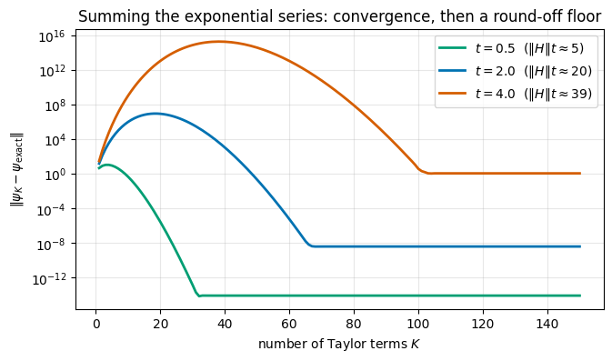
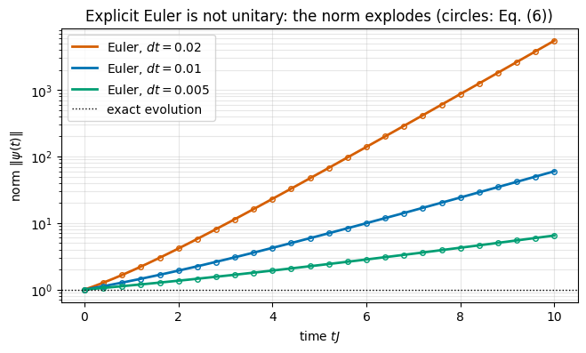
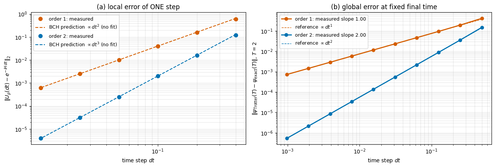
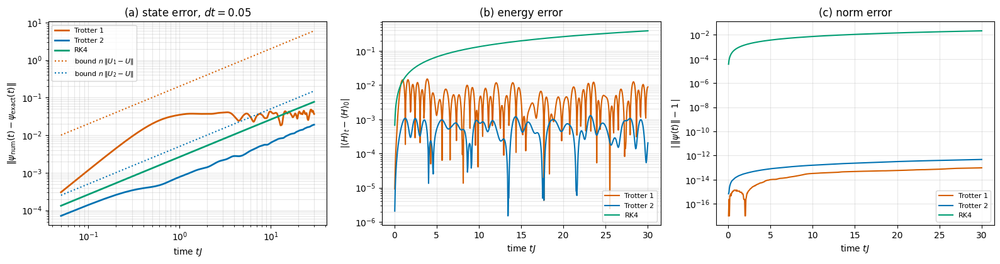
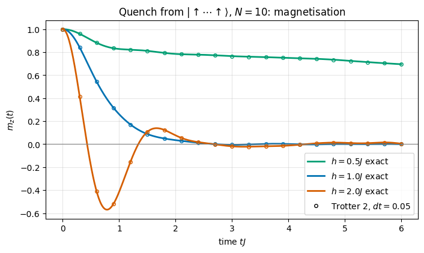
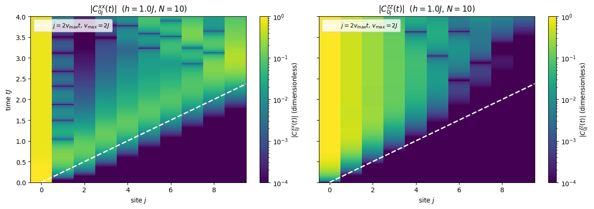
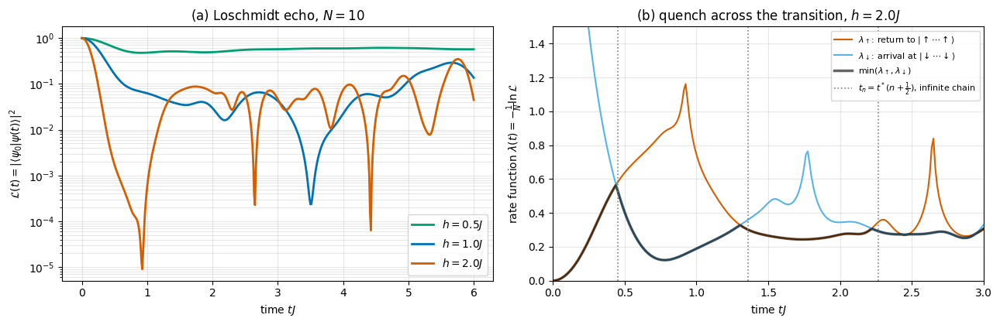
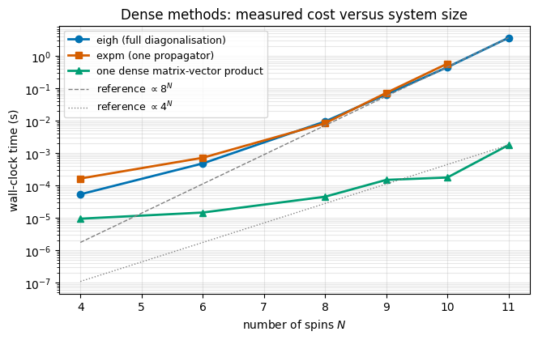

Quantum Many-Body Simulation — Chapter 2 — Quantum many-body spin systems with dense matrices
1. Introduction and motivation
In the previous notebook we learned how to write down a chain of \(N\) interacting spins-1/2, how to build its Hamiltonian as a \(2^N\times2^N\) matrix, and how to find its ground state. That is statics. This notebook is about dynamics: we prepare the chain in some simple state \(|\psi_0\rangle\), let it evolve under its Hamiltonian \(H\), and ask what happens,
Experimental context. For most of the twentieth century this question was academic: a magnet in a laboratory is never isolated well enough for its wave function to evolve coherently. That has changed. Ultracold atoms in optical lattices, chains of trapped ions, arrays of Rydberg atoms held in optical tweezers and superconducting circuits are isolated, controllable spin chains: one prepares a product state, suddenly switches on a Hamiltonian (a quantum quench) and photographs the spins after a time \(t\). Such experiments watch order melt, correlations spread with a finite velocity (a “light cone”), and local observables of an isolated system relax to stationary values — or fail to (reviews: Polkovnikov et al. 2011; Heyl 2018). Interpreting them, and designing the next ones, requires solving the Schrödinger equation for many interacting particles on a computer. It is also the basic task a future quantum computer is expected to do better than we can; to appreciate that claim one should first understand how hard the task is classically, and why.
What we will do. We stay with the textbook representation of notebook 03: states are vectors of length \(2^N\) and operators are dense \(2^N\times2^N\) matrices. Within that setting we go through everything that a practitioner takes for granted about time evolution:
Section 2 — we rebuild the small dense toolbox of notebook 03 (site_operator, build_hamiltonian_dense), so that this notebook runs on its own.
Sections 3–4 — the formal solution \(|\psi(t)\rangle=e^{-iHt}|\psi_0\rangle\); the propagator from an eigendecomposition; what must be conserved (norm, energy) and how to test it.
Section 5 — the matrix exponentialexpm: why summing the Taylor series is a bad idea and what libraries do instead.
Section 6 — treating the Schrödinger equation as an ordinary differential equation: the Euler method fails (we predict and measure the blow-up of the norm), RK4 works much better but comes with a step-size rule \(dt\,\|H\|\le2\sqrt2\) that tightens as the chain grows — and we discuss why physicists nevertheless prefer unitary integrators.
Section 7, the centrepiece — Trotterization of the propagator. Exponentials of non-commuting matrices, the Baker–Campbell–Hausdorff formula derived to the order we need, first-order (Lie–Trotter) and second-order (Strang) splitting, the even/odd decomposition of a chain, measured error scaling against \(dt\) with reference slopes, and error growth in time.
Section 8 — physics: a quench in the transverse-field Ising chain. Magnetisation dynamics, the light cone of correlations, the Loschmidt echo.
Section 9 — the cost of each method in memory and time, why every method of this notebook dies around \(N\approx 12\)–\(14\) spins, and which single observation will let us escape in the next notebook.
What you will learn
Physics
The propagator \(U(t)=e^{-iHt}\), its unitarity and group property, conservation of energy; stationary states and phases.
What a quantum quench is; how local magnetisation relaxes, why correlations spread inside a light cone, what the Loschmidt echo measures.
Numerical methods
Three routes to \(e^{-iHt}|\psi\rangle\): eigendecomposition, matrix exponential (scaling and squaring), ODE integration (Euler, RK4).
Stability and order of accuracy of an integrator; how to measure the order on a log–log plot; the explicit step-size rule \(dt\,\|H\|\le2\sqrt2\) for RK4 and why it tightens with \(N\).
Trotter–Suzuki splitting: local versus global error, the role of commutators, symmetric (Strang) splitting, why splitting is exactly unitary.
Cost accounting: \(O(8^N)\) time and \(O(4^N)\) memory of dense methods.
Implementation practice
Validating every solver against an independent one, and against conservation laws, with asserts.
jax.jit for whole time steps, jax.lax.scan for time loops, jax.vmap over a time grid, jax.scipy.linalg.expm.
Timing JAX code (block_until_ready, compile time versus run time).
03 — Quantum many-body spin systems: tensor products, site_operator, dense Hamiltonians, the transverse-field Ising and XXZ chains, exact diagonalisation with eigh.
One semester of quantum mechanics (Schrödinger equation, spin-1/2, Pauli matrices) is assumed; nothing else. We set \(\hbar=1\) throughout, so energies are frequencies and time is measured in units of the inverse coupling \(1/J\).
Configuration
Every notebook of this course starts with the same cell. Choose where to run (DEVICE) and the floating-point precision (PRECISION): "double" = float64/complex128 (default, recommended for physics), "single" = float32/complex64 (half the memory, faster on consumer GPUs, but watch the round-off). All code below derives its dtypes from RDTYPE/CDTYPE and its check tolerances from TOL, so nothing else needs to change.
Code
# ==============================================================================# CONFIGURATION -- adapt to your hardware, then run the notebook top to bottom# ==============================================================================DEVICE ="auto"# "auto": use a GPU if JAX finds one, else CPU | "cpu" | "gpu"PRECISION ="double"# "double": float64/complex128 | "single": float32/complex64import osif DEVICE =="cpu": os.environ["JAX_PLATFORMS"] ="cpu"# must be set BEFORE jax is importedimport stringfrom functools import partialimport mathimport numpy as npimport jaximport jax.numpy as jnpfrom jax import lax# Precision is configurable: "double" = float64/complex128 (default; needed for long time evolutions and# tight validation), "single" = float32/complex64 (half the memory, faster on consumer GPUs).# In a notebook PRECISION is defined in the Configuration cell; for this module use the env var QE_PRECISION.PRECISION =globals().get("PRECISION", os.environ.get("QE_PRECISION", "double"))jax.config.update("jax_enable_x64", PRECISION =="double")RDTYPE = jnp.float64 if PRECISION =="double"else jnp.float32 # real dtypeCDTYPE = jnp.complex128 if PRECISION =="double"else jnp.complex64 # complex dtype of all states/operatorsTOL =1e-10if PRECISION =="double"else1e-4# tolerance for sanity checks (asserts)_LETTERS = string.ascii_letters # the 52 einsum index labels a-z, A-Zimport timeimport matplotlib.pyplot as pltif DEVICE =="gpu"and jax.default_backend() =="cpu":print("WARNING: DEVICE='gpu' requested but JAX found no GPU -- running on CPU.")print(f"JAX {jax.__version__} | backend: {jax.default_backend()} | devices: {jax.devices()}")print(f"precision: {PRECISION} -> real {RDTYPE.__name__}, complex {CDTYPE.__name__}, check tolerance TOL={TOL:g}")
JAX 0.11.0 | backend: cpu | devices: [CpuDevice(id=0)]
precision: double -> real float64, complex complex128, check tolerance TOL=1e-10
2. The dense toolbox of notebook 03
2.1 Conventions
We use exactly the conventions of notebook 03, which are the conventions of the whole course:
symbol
meaning
\(N\)
number of spins-1/2, labelled \(j=0,1,\dots,N-1\) from left to right
\(X,Y,Z\)
Pauli matrices; \(\vert 0\rangle=(1,0)^T=\vert{\uparrow}\rangle\) is the \(+1\) eigenstate of \(Z\), \(\vert 1\rangle=(0,1)^T=\vert{\downarrow}\rangle\)
\(\vert s_0s_1\dots s_{N-1}\rangle\)
basis state with bits \(s_j\in\{0,1\}\); its position in the state vector is the flat index \(i=\sum_j s_j\,2^{N-1-j}\) (spin 0 = most significant bit)
\(O_j\)
operator \(O\) acting on spin \(j\): \(\mathbb 1\otimes\dots\otimes O\otimes\dots\otimes\mathbb 1\) with \(O\) as the \(j\)-th Kronecker factor
\(D=2^N\)
dimension of the Hilbert space
The family of Hamiltonians is written in the Pauli convention (no factors of \(1/2\)):
where \(\langle i,j\rangle\) runs over nearest neighbours \((j,j+1)\) of an open chain (plus the bond \((N-1,0)\) if periodic=True). Special cases: the transverse-field Ising model (TFIM) \(H=-J\sum_jZ_jZ_{j+1}-h\sum_jX_j\), i.e. \(J_{zz}=-J\), \(h_x=-h\); the Heisenberg/XXZ chain\(J_{xx}=J_{yy}=J\), \(J_{zz}=\Delta J\).
2.2 From formula to code
site_operator(op, j, N) is the Kronecker chain \(\mathbb 1\otimes\dots\otimes O\otimes\dots\otimes\mathbb 1\): start from the \(1\times1\) matrix \((1)\) and multiply from the right with jnp.kron, inserting op at position j and the \(2\times2\) identity elsewhere. Because spin 0 is the leftmost factor, it is the most significant bit of the flat index — consistent with the table above.
two_site_operator(h2, j, N) embeds a \(4\times4\) matrix acting on the neighbouring spins \((j,j+1)\) (notebook 03 used the same name for a function of two single-spin operators on arbitrary sites; this version takes a general bond matrix): \(\mathbb 1_{2^j}\otimes h_2\otimes\mathbb 1_{2^{N-j-2}}\). For a product \(h_2=A\otimes B\) it equals site_operator(A,j,N) @ site_operator(B,j+1,N) (we check this), but it needs no large matrix product. We will need it again for Trotterization, where \(h_2\) is not a simple product.
build_hamiltonian_dense adds up all terms of Eq. (1).
Code
from jax.scipy.linalg import expm # dense matrix exponential (Section 5)# ==============================================================================# STEP 1: Pauli matrices and embedded operators (conventions of notebook 03; two_site_operator takes a 4x4 bond matrix here)# ==============================================================================I2 = jnp.eye(2, dtype=CDTYPE)X = jnp.array([[0, 1], [1, 0]], dtype=CDTYPE)Y = jnp.array([[0, -1j], [1j, 0]], dtype=CDTYPE)Z = jnp.array([[1, 0], [0, -1]], dtype=CDTYPE)# colour-blind-friendly palette (Okabe-Ito) used in all figuresC_BLUE, C_ORANGE, C_GREEN, C_PINK, C_YELLOW, C_SKY ="#0072B2", "#D55E00", "#009E73", "#CC79A7", "#E69F00", "#56B4E9"def site_operator(op, j, N):"""Single-site operator `op` (2x2) acting on spin j of an N-spin chain, as a dense 2^N x 2^N matrix. MATH O_j = 1 (x) ... (x) 1 (x) O (x) 1 (x) ... (x) 1 (O is the j-th Kronecker factor, j = 0..N-1) IMPLEMENTATION a chain of N `jnp.kron` products starting from the 1x1 matrix (1). Spin 0 is the LEFTMOST factor = most significant bit of the flat index. COST 4^N numbers of memory -- for an object that is defined by 4 numbers. Remember this (Section 9). """ out = jnp.eye(1, dtype=CDTYPE)for k inrange(N): out = jnp.kron(out, op if k == j else I2)return outdef two_site_operator(h2, j, N):"""Two-site operator `h2` (4x4, basis |00>,|01>,|10>,|11> of spins j, j+1) embedded in the N-spin space. MATH h_{j,j+1} = 1_{2^j} (x) h2 (x) 1_{2^(N-j-2)} IMPLEMENTATION two `jnp.kron` calls with identity blocks; the left spin of the pair (j) is the left Kronecker factor of h2, e.g. h2 = kron(Z, Z) or kron(X, 1). """ left = jnp.eye(2** j, dtype=CDTYPE) right = jnp.eye(2** (N - j -2), dtype=CDTYPE)return jnp.kron(jnp.kron(left, jnp.asarray(h2, dtype=CDTYPE)), right)def build_hamiltonian_dense(N, Jxx, Jyy, Jzz, hx, hy, hz, periodic=False):"""Dense 2^N x 2^N Hamiltonian of a spin-1/2 chain in the Pauli convention, Eq. (1): MATH H = sum_<ij> (Jxx X_i X_j + Jyy Y_i Y_j + Jzz Z_i Z_j) + sum_i (hx X_i + hy Y_i + hz Z_i) TFIM: Jzz = -J, hx = -h. XXZ: Jxx = Jyy = J, Jzz = Delta*J. IMPLEMENTATION bonds (j, j+1) via `two_site_operator`; the periodic bond (N-1, 0) is not a block of neighbouring Kronecker factors, so it is built as a product of two site operators. COST O(N 4^N) operations, O(4^N) memory. """ D =2** N H = jnp.zeros((D, D), dtype=CDTYPE) h2 = Jxx * jnp.kron(X, X) + Jyy * jnp.kron(Y, Y) + Jzz * jnp.kron(Z, Z) # 4x4 bond matrixfor j inrange(N -1): H = H + two_site_operator(h2, j, N)if periodic and N >2:for Jc, P in ((Jxx, X), (Jyy, Y), (Jzz, Z)):if Jc !=0: H = H + Jc * site_operator(P, N -1, N) @ site_operator(P, 0, N) h1 = hx * X + hy * Y + hz * Z # 2x2 field matrixif hx !=0or hy !=0or hz !=0:for j inrange(N): H = H + site_operator(h1, j, N)return Hdef max_abs(A):"""Largest absolute entry of an array, as a Python float (our standard error measure in checkpoints)."""returnfloat(jnp.max(jnp.abs(A)))
Checkpoint. Never trust a builder you have not tested. Three independent checks: (i) for \(N=2\) the TFIM matrix can be written down by hand, (ii) the block embedding agrees with the product of two site operators, (iii) \(H\) is Hermitian for a generic set of couplings, open and periodic.
Code
# ==============================================================================# CHECKPOINT 1: the Hamiltonian builder# ==============================================================================# (i) N = 2 TFIM by hand: H = -J Z(x)Z - h (X(x)1 + 1(x)X), basis |00>,|01>,|10>,|11>J_, h_ =1.0, 0.7H2_hand = jnp.array([[-J_, -h_, -h_, 0.0], [-h_, +J_, 0.0, -h_], [-h_, 0.0, +J_, -h_], [0.0, -h_, -h_, -J_]], dtype=CDTYPE)err_hand = max_abs(build_hamiltonian_dense(2, 0.0, 0.0, -J_, -h_, 0.0, 0.0) - H2_hand)# (ii) block embedding == product of site operatorserr_embed = max_abs(two_site_operator(jnp.kron(X, Y), 1, 4) - site_operator(X, 1, 4) @ site_operator(Y, 2, 4))# (iii) Hermiticity for generic couplingserrs_herm = []for periodic in (False, True): Hg = build_hamiltonian_dense(5, 0.3, -1.1, 0.8, 0.5, -0.4, 0.9, periodic=periodic) errs_herm.append(max_abs(Hg - Hg.conj().T))print(f"(i) N=2 TFIM vs hand-written matrix : {err_hand:.1e}")print(f"(ii) block embedding vs site product : {err_embed:.1e}")print(f"(iii) ||H - H^dag||_max open/periodic : {errs_herm[0]:.1e} / {errs_herm[1]:.1e}")assertmax(err_hand, err_embed, *errs_herm) < TOL
(i) N=2 TFIM vs hand-written matrix : 0.0e+00
(ii) block embedding vs site product : 0.0e+00
(iii) ||H - H^dag||_max open/periodic : 0.0e+00 / 0.0e+00
All three errors are exactly zero (sums of a few numbers of order one incur no round-off here). The builder is safe to use.
2.3 States and observables
A basis state\(|s_0\dots s_{N-1}\rangle\) is a vector with a single 1 at the flat index \(i=\sum_js_j2^{N-1-j}\). The fully polarised state \(|{\uparrow\uparrow\cdots\uparrow}\rangle=|00\cdots0\rangle\) is therefore the unit vector \(e_0\).
A general expectation value is \(\langle O\rangle=\langle\psi|O|\psi\rangle\) = vdot(psi, O @ psi) (jnp.vdot complex-conjugates its first argument).
For observables that are diagonal in the computational basis (\(Z_j\), \(Z_iZ_j\), …) no matrix is needed. In the basis state \(|s\rangle\) the operator \(Z_j\) has the value \(z_j(s)=(-1)^{s_j}=1-2s_j\), hence
We store all values \(z_j(s)\) once in a table of shape \((2^N,N)\), extracted from the bits of the flat index with shifts: \(s_j\) = (i >> (N-1-j)) & 1. Then all\(N\) magnetisations are one matrix–vector product probs @ ztab.
Code
# ==============================================================================# STEP 2: states and observables# ==============================================================================def basis_state(bits):"""Computational basis state |s_0 s_1 ... s_{N-1}> as a flat vector of length 2^N. MATH flat index i = sum_j s_j 2^(N-1-j) (spin 0 = most significant bit); 0 = up, 1 = down. JAX arrays are immutable: `.at[i].set(1)` returns an updated copy (see notebook 01). """ N =len(bits) i =sum(int(s) << (N -1- j) for j, s inenumerate(bits))return jnp.zeros(2** N, dtype=CDTYPE).at[i].set(1.0)def expectation(psi, O):"""<psi|O|psi> for a dense Hermitian matrix O (real part; the imaginary part is round-off)."""return jnp.real(jnp.vdot(psi, O @ psi))def z_table(N):"""Table z[i, j] = eigenvalue (+1/-1) of Z_j in the basis state with flat index i. Shape (2^N, N). MATH z_j(s) = 1 - 2 s_j, s_j = (i >> (N-1-j)) & 1 USE <Z_j> = sum_i |psi_i|^2 z[i, j] -> all N magnetisations at once: probs @ z_table(N). """ i = jnp.arange(2** N) bits = (i[:, None] >> jnp.arange(N -1, -1, -1)[None, :]) &1return (1-2* bits).astype(RDTYPE)# quick self-test on a random normalised state of 4 spinskey = jax.random.PRNGKey(0)k1, k2 = jax.random.split(key)v = jax.random.normal(k1, (16,)) +1j* jax.random.normal(k2, (16,))v = (v / jnp.linalg.norm(v)).astype(CDTYPE)mz_matrix = jnp.array([expectation(v, site_operator(Z, j, 4)) for j inrange(4)])mz_table = (jnp.abs(v) **2) @ z_table(4)print("<Z_j> from dense matrices :", np.round(np.asarray(mz_matrix), 6))print("<Z_j> from the z-table :", np.round(np.asarray(mz_table), 6))assert max_abs(mz_matrix - mz_table) < TOL
<Z_j> from dense matrices : [0.134798 0.60606 0.078249 0.068424]
<Z_j> from the z-table : [0.134798 0.60606 0.078249 0.068424]
The two routes agree. The second one never touched a \(2^N\times2^N\) matrix — a first hint of the theme that will take over in notebook 05.
JAX practice. Randomness in JAX is explicit: a key (PRNGKey(0)) is split into independent sub-keys, and the same key always gives the same numbers. The notebook is therefore reproducible bit by bit. See notebook 01.
3. The Schrödinger equation and the propagator
3.1 Formal solution
For a time-independent \(H\) the Schrödinger equation \(i\,\partial_t|\psi\rangle=H|\psi\rangle\) is a linear system of \(D=2^N\) coupled ordinary differential equations with constant coefficients. Exactly as for the scalar equation \(\dot y=ay\Rightarrow y(t)=e^{at}y(0)\), its solution is
Proof. Differentiate the series term by term: \(\frac{d}{dt}U(t)=\sum_{k\ge1}\frac{(-iH)^k t^{k-1}}{(k-1)!}=-iH\,U(t)\), and \(U(0)=\mathbb 1\). \(\square\)
The matrix \(U(t)\) is called the propagator (or time-evolution operator; Sakurai and Napolitano, §2.1). Three properties follow directly from \(H=H^\dagger\) and will serve as our test suite for every numerical method:
Unitarity.\(U(t)^\dagger=e^{+iH^\dagger t}=e^{+iHt}=U(-t)=U(t)^{-1}\). Consequently the norm is conserved, \(\langle\psi(t)|\psi(t)\rangle=\langle\psi_0|U^\dagger U|\psi_0\rangle=1\): probability does not leak.
Group property.\(U(t_1+t_2)=U(t_1)U(t_2)\), because \(Ht_1\) and \(Ht_2\) commute (Section 7.1 shows that commuting exponents simply add). Evolving for \(t\) in one go or in \(n\) small steps of \(dt=t/n\) is the same thing: \(U(t)=U(dt)^n\).
Energy conservation.\([H,U(t)]=0\) since \(U\) is a power series in \(H\); hence \(\langle H\rangle_t=\langle\psi_0|U^\dagger HU|\psi_0\rangle=\langle\psi_0|H|\psi_0\rangle\). More generally, the expectation value of any operator that commutes with \(H\) is constant.
The whole notebook is about one question: how do we compute the action of \(e^{-iHt}\) on a vector when \(H\) is a big matrix?
4. Method 1 — the propagator from an eigendecomposition
4.1 Derivation
Let \(H|n\rangle=E_n|n\rangle\) with orthonormal eigenvectors \(|n\rangle\), \(n=0,\dots,D-1\). Collect the eigenvectors as the columns of a unitary matrix \(V\) and the eigenvalues in a diagonal matrix \(E\); then \(H=VEV^\dagger\). Powers are easy, \(H^k=VE^kV^\dagger\) (all inner \(V^\dagger V=\mathbb 1\) cancel), so the series (2) gives
Once \(H\) is diagonalised (cost \(O(D^3)=O(8^N)\), paid once), the state at any time \(t\) — tomorrow or in a billion years — costs two matrix–vector products, \(O(D^2)\), and carries no time-step error whatsoever. This is why exact diagonalisation (ED) is the reference method for small systems.
4.2 From formula to code
diagonalize(H) = jnp.linalg.eigh (for Hermitian matrices, algorithms in Numerical Recipes, Ch. 11; returns real ascending eigenvalues E of shape (D,) and V of shape (D, D) whose columns are eigenvectors).
evolve_eigh is Eq. (4) literally: V @ (exp(-1j*E*t) * (V^dag @ psi0)). The product phase * c is element-wise (a diagonal matrix times a vector).
propagator_eigh builds the full matrix of Eq. (3). The idiom (V * phase) @ V^dag multiplies column\(n\) of \(V\) by phase[n] through broadcasting — that is \(V\,{\rm diag}({\rm phase})\) without ever forming the diagonal matrix.
For a whole time gridts of shape (T,) we want all states at once. jnp.outer(ts, E) has shape (T, D); multiplying by c broadcasts over the time axis; one matrix product with V.T maps every row back to the original basis: states[k] = V @ c(t_k), shape (T, D).
Code
# ==============================================================================# STEP 3: exact evolution via the eigendecomposition H = V E V^dag# ==============================================================================def diagonalize(H):"""Full eigendecomposition of a Hermitian matrix: H = V diag(E) V^dag. Returns E (D,) real ascending and V (D, D) with eigenvectors as COLUMNS. COST O(D^3) = O(8^N). """return jnp.linalg.eigh(H)def propagator_eigh(E, V, t):"""U(t) = V exp(-i E t) V^dag as a dense D x D matrix, Eq. (3). IMPLEMENTATION `V * phase` scales column n of V by phase[n] (broadcasting) = V @ diag(phase). """return (V * jnp.exp(-1j* E * t)) @ V.conj().Tdef evolve_eigh(E, V, psi0, t):"""|psi(t)> = V exp(-i E t) V^dag |psi0>, Eq. (4): expand in eigenstates, rotate phases, transform back. COST O(D^2) per time, NO time-step error: t may be arbitrarily large. """ c = V.conj().T @ psi0 # c_n = <n|psi0>return V @ (jnp.exp(-1j* E * t) * c) # sum_n e^{-i E_n t} c_n |n>@jax.jitdef evolve_eigh_many(E, V, psi0, ts):"""States on a whole time grid at once. ts: (T,) -> states: (T, D), states[k] = |psi(ts[k])>. IMPLEMENTATION phases = exp(-i outer(ts, E)) has shape (T, D); `phases * c` broadcasts c over the T rows; `(...) @ V.T` applies V to every row: out[k, i] = sum_n V[i, n] c_n(t_k). JAX jit-compiled: the broadcast, the exponential and the matmul are fused into one XLA program. """ c = V.conj().T @ psi0return (jnp.exp(-1j* jnp.outer(ts, E)) * c[None, :]) @ V.T
4.3 Checkpoint on a problem with a known answer: one spin in a field
A single spin with \(H=h_xX\), prepared in \(|{\uparrow}\rangle\). Since \(X^2=\mathbb 1\), the exponential series splits into even and odd powers,
so \(|\psi(t)\rangle=\cos(h_xt)|{\uparrow}\rangle-i\sin(h_xt)|{\downarrow}\rangle\) and \(\langle Z\rangle_t=\cos^2(h_xt)-\sin^2(h_xt)=\cos(2h_xt)\): Larmor precession at the angular frequency \(2h_x\) — the level splitting of \(H\), as it must be. The same code that will evolve ten spins must reproduce this.
Code
# ==============================================================================# CHECKPOINT 2: Larmor precession of a single spin, <Z>(t) = cos(2 hx t)# ==============================================================================hx_1 =0.8H_1 = build_hamiltonian_dense(1, 0.0, 0.0, 0.0, hx_1, 0.0, 0.0) # = hx XE_1, V_1 = diagonalize(H_1)ts_1 = jnp.linspace(0.0, 10.0, 201)states_1 = evolve_eigh_many(E_1, V_1, basis_state([0]), ts_1) # (T, 2)z_numeric = (jnp.abs(states_1) **2) @ z_table(1)[:, 0]err_larmor = max_abs(z_numeric - jnp.cos(2* hx_1 * ts_1))print(f"eigenvalues of H = hx X : {np.asarray(E_1)} (expected -hx, +hx = {-hx_1}, {hx_1})")print(f"max |<Z>(t) - cos(2 hx t)| on t in [0, 10] : {err_larmor:.1e}")assert err_larmor < TOL
eigenvalues of H = hx X : [-0.8 0.8] (expected -hx, +hx = -0.8, 0.8)
max |<Z>(t) - cos(2 hx t)| on t in [0, 10] : 5.6e-16
Machine precision at all times: no time step, no accumulation of error.
4.4 The working example of this notebook, and the checkpoints every propagator must pass
From now on our laboratory is the transverse-field Ising chain\(H=-J\sum_jZ_jZ_{j+1}-h\sum_jX_j\) with \(N=8\) spins (\(D=256\): small enough that every dense operation is instantaneous, large enough to be a genuine many-body problem), started from \(|{\uparrow\uparrow\cdots\uparrow}\rangle\). For \(h=0\) this state is an eigenstate (one of the two ferromagnetic ground states) and nothing would happen; the transverse field flips spins and sets things in motion.
Code
# ==============================================================================# PARAMETERS of the working example (change them and re-run the notebook)# ==============================================================================N =8# number of spins (D = 2^N = 256)J =1.0# Ising coupling: sets the unit of energy, 1/J the unit of timeh =1.0# transverse field (h = J is the quantum critical point of the infinite chain)T_FINAL =10.0# final time, in units of 1/JH = build_hamiltonian_dense(N, 0.0, 0.0, -J, -h, 0.0, 0.0) # TFIM: Jzz = -J, hx = -hpsi0 = basis_state([0] * N) # |up up ... up>ZTAB = z_table(N)t0 = time.perf_counter()E, V = diagonalize(H)E.block_until_ready()print(f"eigh of the {2**N} x {2**N} Hamiltonian: {time.perf_counter() - t0:.2f} s (includes JAX compilation/dispatch overhead)")print(f"spectrum: E_min = {float(E[0]):.4f}, E_max = {float(E[-1]):.4f}, spectral width W = {float(E[-1] - E[0]):.4f}")print(f"energy of the initial state <H> = {float(expectation(psi0, H)):.4f} (= -J (N-1): all {N-1} bonds satisfied, <X_j> = 0)")
eigh of the 256 x 256 Hamiltonian: 0.04 s (includes JAX compilation/dispatch overhead)
spectrum: E_min = -9.8380, E_max = 9.8380, spectral width W = 19.6759
energy of the initial state <H> = -7.0000 (= -J (N-1): all 7 bonds satisfied, <X_j> = 0)
Code
# ==============================================================================# CHECKPOINT 3: unitarity, group property, energy conservation, stationary states# ==============================================================================t_a, t_b =0.7, 1.9U_a, U_b, U_ab = (propagator_eigh(E, V, t) for t in (t_a, t_b, t_a + t_b))err_unitary = max_abs(U_a.conj().T @ U_a - jnp.eye(2** N))err_group = max_abs(U_a @ U_b - U_ab)err_commute = max_abs(H @ U_a - U_a @ H)psi_t = evolve_eigh(E, V, psi0, 1000.0) # a LONG time -- no problem for this methoderr_norm =abs(float(jnp.linalg.norm(psi_t)) -1.0)err_energy =abs(float(expectation(psi_t, H) - expectation(psi0, H)))# an eigenstate only acquires a phase: U(t)|n> = e^{-i E_n t}|n> ("stationary state")n_test =5err_stationary = max_abs(evolve_eigh(E, V, V[:, n_test], 3.3) - jnp.exp(-1j* E[n_test] *3.3) * V[:, n_test])print(f"unitarity ||U^dag U - 1||_max = {err_unitary:.1e}")print(f"group property ||U(ta)U(tb) - U(ta+tb)||_max = {err_group:.1e}")print(f"[H, U] = 0 ||HU - UH||_max = {err_commute:.1e}")print(f"norm at t=1000 | ||psi|| - 1 | = {err_norm:.1e}")print(f"energy at t=1000 |<H>_t - <H>_0| = {err_energy:.1e}")print(f"stationary state ||U|n> - e^(-iEt)|n>||_max = {err_stationary:.1e}")assertmax(err_unitary, err_group, err_commute, err_norm, err_energy, err_stationary) < TOL
unitarity ||U^dag U - 1||_max = 1.6e-15
group property ||U(ta)U(tb) - U(ta+tb)||_max = 1.1e-15
[H, U] = 0 ||HU - UH||_max = 3.4e-15
norm at t=1000 | ||psi|| - 1 | = 0.0e+00
energy at t=1000 |<H>_t - <H>_0| = 1.8e-15
stationary state ||U|n> - e^(-iEt)|n>||_max = 4.3e-16
Everything holds to round-off (\(10^{-16}\)–\(10^{-15}\)), even at \(t=1000\). We now have a trusted reference against which all approximate methods below will be measured.
4.5 First look at many-body dynamics
We compute the state on a grid of 401 times with evolve_eigh_many and extract the average magnetisation \(m_z(t)=\frac1N\sum_j\langle Z_j\rangle_t\) with the \(z\)-table. For a sanity check at short times we use the expansion \(\langle O\rangle_t=\langle O\rangle_0+it\langle[H,O]\rangle_0-\frac{t^2}{2}\langle[H,[H,O]]\rangle_0+\dots\) (obtained by expanding \(e^{iHt}Oe^{-iHt}\)). For \(O=Z_j\) and the TFIM: \([H,Z_j]=-h[X_j,Z_j]=2ihY_j\), whose expectation value vanishes in \(|{\uparrow\cdots\uparrow}\rangle\); next, \([H,2ihY_j]=2ih\big(2iJ(Z_{j-1}+Z_{j+1})X_j-2ihZ_j\big)\), and with \(\langle X_j\rangle_0=0\), \(\langle Z_j\rangle_0=1\) we get \(\langle[H,[H,Z_j]]\rangle_0=4h^2\). Hence
\[ m_z(t)=1-2h^2t^2+O(t^4): \]
initially every spin simply starts to precess around the field, not yet knowing about its neighbours.
Code
# ==============================================================================# EXPERIMENT 1: magnetisation after the quench, exact (eigendecomposition)# ==============================================================================ts = jnp.linspace(0.0, T_FINAL, 401)states_exact = evolve_eigh_many(E, V, psi0, ts) # (T, D)probs = jnp.abs(states_exact) **2# (T, D) Born probabilities of all basis statesmz_sites = probs @ ZTAB # (T, N) <Z_j>(t)mz_exact = mz_sites.mean(axis=1)fig, ax = plt.subplots(figsize=(7.5, 4))ax.plot(ts, mz_exact, color=C_BLUE, lw=2, label=r"exact, $N=8$, $h=J$")t_short = np.linspace(0, 0.45, 50)ax.plot(t_short, 1-2* h **2* t_short **2, "--", color=C_ORANGE, lw=2, label=r"short-time expansion $1-2h^2t^2$")ax.axhline(0, color="gray", lw=0.8)ax.set_xlabel(r"time $tJ$"); ax.set_ylabel(r"$m_z(t)=\frac{1}{N}\sum_j\langle Z_j\rangle$")ax.set_title("TFIM quench from $|\\uparrow\\uparrow\\cdots\\uparrow\\rangle$: exact magnetisation")ax.legend(); ax.grid(alpha=0.3)plt.show()# the remainder should behave as c4 * t^4: print it divided by t^4 at the first two grid times -- a constant confirms the orderfor k_short in (1, 2): t_s =float(ts[k_short]) err_short =abs(float(mz_exact[k_short]) - (1-2* h **2* t_s **2))print(f"t = {t_s:.4f}: m_z = {float(mz_exact[k_short]):.8f}, 1 - 2 h^2 t^2 = {1-2*h**2*t_s**2:.8f}, "f"difference = {err_short:.2e} = {err_short / t_s **4:.2f} * t^4")
Interpretation. The ferromagnetic order of the initial state melts: \(m_z\) drops from 1 to about zero within \(t\approx2/J\), following the parabola \(1-2h^2t^2\) at the very beginning: the printed remainder divided by \(t^4\) is the same number (\(\approx2.8\)) at both times, which is what “the next term is \(O(t^4)\)” means. (The expansion predicts the order of the remainder; the coefficient \(2.8\) contains the \(\tfrac23h^4\) of a free spin plus a contribution from the coupling.) Afterwards it does not stay at zero: in a chain of only 8 spins the excitations created by the quench travel to the ends, are reflected, and come back — and around \(tJ\approx9\) they rebuild a magnetisation of magnitude \(0.6\), here with the opposite sign. These finite-size revivals are a property of the small system; the method itself is exact. We come back to the physics in Section 8; first we need more methods.
5. Method 2 — the matrix exponential expm
5.1 Why summing the Taylor series fails
Equation (2) defines\(e^{-iHt}\) as a power series, and the series converges for every matrix. So why not just sum it? Because of catastrophic cancellation. The terms \(\frac{(\|H\|t)^k}{k!}\) first grow — up to \(k\approx\|H\|t\), where they reach about \(e^{\|H\|t}\) — before the factorial wins. The result, however, is a unitary matrix with entries of modulus \(\le1\): huge terms of alternating phase must cancel to many digits. In floating-point arithmetic with relative precision \(\epsilon\approx10^{-16}\) each term carries an absolute round-off of about \(\epsilon\times\)(its size), so the sum is polluted by an error of order \(\epsilon\,e^{\|H\|t}\).
Throughout this notebook \(\|H\|\) means the operator norm (largest singular value); for a Hermitian matrix that is simply \(\|H\|=\max_n|E_n|\), the spectral radius. For our chain it is \(9.838\), printed above — round it to 10:
Let us see it. We sum the series for the vector\(e^{-iHt}\psi_0\) (each new term is \(-iHt/k\) times the previous one, so one matrix–vector product per term) and record the error of every partial sum. The recurrence is a loop with a carry — exactly what lax.scan is for.
JAX practice.lax.scan(body, carry, xs) runs carry, y = body(carry, x) for every x in xs, inside one compiled program, and stacks the ys. Here the carry is (term, partial_sum). A Python for loop under jit would instead be unrolled into K copies of the body. See notebook 01.
Code
# ==============================================================================# EXPERIMENT 2: partial sums of the Taylor series for exp(-iHt)|psi0># ==============================================================================@jax.jitdef taylor_partial_sum_errors(H, psi0, t, psi_ref, ks):"""Errors || sum_{k<=K} (-iHt)^k/k! psi0 - psi_ref || for K = 1, 2, ..., len(ks). MATH term_k = (-i t H / k) term_{k-1}, term_0 = psi0 (one matvec per term) JAX lax.scan with carry (term, partial sum); `ks` = [1., 2., ..., K] are the scanned inputs. """def body(carry, k): term, acc = carry term = (-1j* t / k) * (H @ term) acc = acc + termreturn (term, acc), jnp.linalg.norm(acc - psi_ref) _, errs = lax.scan(body, (psi0, psi0), ks)return errsK_MAX =150ks = jnp.arange(1, K_MAX +1, dtype=RDTYPE)fig, ax = plt.subplots(figsize=(7.5, 4))for t_taylor, col inzip((0.5, 2.0, 4.0), (C_GREEN, C_BLUE, C_ORANGE)): errs = taylor_partial_sum_errors(H, psi0, t_taylor, evolve_eigh(E, V, psi0, t_taylor), ks) ax.semilogy(ks, errs, color=col, lw=2, label=rf"$t={t_taylor}$ ($\|H\|t\approx{float(jnp.max(jnp.abs(E)))*t_taylor:.0f}$)")print(f"t = {t_taylor}: best achievable error of the Taylor sum = {float(jnp.min(errs)):.1e}, largest intermediate error = {float(jnp.max(errs)):.1e}")ax.set_xlabel("number of Taylor terms $K$"); ax.set_ylabel(r"$\|\psi_K-\psi_{\rm exact}\|$")ax.set_title("Summing the exponential series: convergence, then a round-off floor")ax.legend(); ax.grid(alpha=0.3, which="both")plt.show()
t = 0.5: best achievable error of the Taylor sum = 6.8e-15, largest intermediate error = 1.1e+01
t = 2.0: best achievable error of the Taylor sum = 3.8e-09, largest intermediate error = 9.2e+06
t = 4.0: best achievable error of the Taylor sum = 1.1e+00, largest intermediate error = 2.0e+15

Interpretation. For \(\|H\|t\approx5\) the series converges to machine precision with about 30 terms. For \(\|H\|t\approx20\) the partial sums first explode (errors of order \(10^{7}\)) before converging, and the final accuracy is stuck several orders of magnitude above machine precision. For \(\|H\|t\approx40\) the partial sums reach \(\sim10^{15}\) and the “converged” result is garbage: its error is of order one or larger, i.e. not a single correct digit, however many terms are summed. The floors follow the estimate \(\epsilon\,e^{\|H\|t}\) of the table (within one or two orders of magnitude — the vector \(\psi_0\) does not probe the worst case).
5.2 What expm does instead: scaling and squaring
The cure uses the group property: \(e^{A}=\big(e^{A/2^s}\big)^{2^s}\). Choose \(s\) such that \(\|A\|/2^s\lesssim1\); for such a small argument a short expansion is both accurate and free of cancellation (libraries use a Padé approximant, a ratio of two polynomials, which is more economical than the Taylor polynomial); then square the result \(s\) times. Cost: a handful of \(D\times D\) matrix products plus \(s\approx\log_2\|A\|\) squarings — \(O(D^3)\), the same order as eigh. This is what jax.scipy.linalg.expm (like SciPy and MATLAB) implements; we quote the algorithm without proof, see Moler & Van Loan and Higham in the references.
expm needs no Hermiticity, so it also works for non-Hermitian generators (open systems, imaginary time). For Hermitian \(H\) the eigendecomposition is usually preferable: one factorisation serves all times, while expm must be called again for each new \(t\).
Code
# ==============================================================================# CHECKPOINT 4: expm versus eigendecomposition (+ timing: compile time vs run time)# ==============================================================================t_test =4.0# the time at which the Taylor series failedt0 = time.perf_counter()U_expm = expm(-1j* H * t_test).block_until_ready() # first call: includes compilationt_first = time.perf_counter() - t0t0 = time.perf_counter()U_expm = expm(-1j* H * t_test).block_until_ready() # second call: run time onlyt_second = time.perf_counter() - t0err_expm = max_abs(U_expm - propagator_eigh(E, V, t_test))err_expm_unitary = max_abs(U_expm.conj().T @ U_expm - jnp.eye(2** N))print(f"expm, first call (compile + run): {t_first:.3f} s | second call (run only): {t_second:.3f} s")print(f"||expm(-iHt) - V e^(-iEt) V^dag||_max = {err_expm:.1e} unitarity of expm result: {err_expm_unitary:.1e}")assert err_expm <100* TOL and err_expm_unitary <100* TOL
expm, first call (compile + run): 0.241 s | second call (run only): 0.014 s
||expm(-iHt) - V e^(-iEt) V^dag||_max = 4.4e-15 unitarity of expm result: 1.6e-15
Two completely different algorithms agree to round-off at the same \(t=4\) where the naive series lost all digits. The first call is several times slower than the second, and the reason is not the mathematics:
JAX practice. JAX compiles a function the first time it meets a new combination of input shapes and dtypes; later calls reuse the compiled program. JAX also dispatches work asynchronously — Python gets the handle of a result before the computation has finished. Our timing code therefore (i) calls .block_until_ready() before stopping the clock and (ii) reports the first call separately from subsequent ones.
6. Method 3 — the Schrödinger equation as an ODE
Both methods so far need \(O(D^3)\) operations on a dense matrix. A tempting alternative: treat \(\dot\psi=f(\psi)\) with \(f(\psi)=-iH\psi\) as an ordinary differential equation and integrate it step by step, as one would integrate Newton’s equations. Each step needs only matrix–vector products \(H\psi\), \(O(D^2)\).
6.1 Explicit Euler, and why it must fail
The simplest integrator replaces the derivative by a finite difference, \(\psi(t+dt)\approx\psi(t)+dt\,\dot\psi(t)\):
This is the exponential series truncated after the linear term, so the error made in one step (local error) is \(O(dt^2)\); after \(n=t/dt\) steps the global error is \(O(dt)\): a first-order method. But there is a more serious problem: the matrix \(\mathbb 1-iH\,dt\) is not unitary. Apply it to an eigenstate \(|n\rangle\):
The exact evolution multiplies the amplitude by the pure phase \(e^{-iE_ndt}\) (modulus 1); Euler multiplies it by a number of modulus larger than one, in every step. Since the eigenstates are orthogonal, the norm after \(n\) steps is, exactly,
For small \(dt\): \((1+E^2dt^2)^{t/dt}\approx e^{E^2\,t\,dt}\) — exponential growth in time for any fixed \(dt\). Reducing \(dt\) only postpones the explosion. Let us verify the prediction (6) to the last digit.
6.2 From formula to code
A one-step method is a function step(H, psi, dt) -> psi_new. The time loop is a lax.scan whose carry is the state and whose stacked output is the whole trajectory, shape (n_steps+1, D). The step itself is written as whole-array operations, as in Chapter B16 of Numerical Recipes in Fortran 90. The step function and the number of steps are static arguments of jit (they determine the structure of the compiled program), H, psi0 and dt are traced arrays.
Code
# ==============================================================================# STEP 4: one-step ODE integrators and a generic scan-based time loop# ==============================================================================def euler_step(H, psi, dt):"""Explicit Euler step for d psi/dt = -i H psi: psi_{n+1} = (1 - i H dt) psi_n. Local error O(dt^2); NOT unitary."""return psi -1j* dt * (H @ psi)def rk4_step(H, psi, dt):"""Classical 4th-order Runge-Kutta step for d psi/dt = f(psi) = -i H psi. MATH k1 = f(psi), k2 = f(psi + dt/2 k1), k3 = f(psi + dt/2 k2), k4 = f(psi + dt k3), psi_{n+1} = psi + dt/6 (k1 + 2 k2 + 2 k3 + k4). For a LINEAR equation this equals the Taylor polynomial of exp(-iH dt) up to (dt)^4: local error O(dt^5). COST 4 matrix-vector products per step. Not unitary (see Section 6.3). """ f =lambda p: -1j* (H @ p) k1 = f(psi) k2 = f(psi +0.5* dt * k1) k3 = f(psi +0.5* dt * k2) k4 = f(psi + dt * k3)return psi + (dt /6.0) * (k1 +2* k2 +2* k3 + k4)@partial(jax.jit, static_argnames=("step_fn", "n_steps", "record"))def integrate(step_fn, H, psi0, dt, n_steps, record=True):"""Apply `step_fn` n_steps times. Returns the trajectory, shape (n_steps+1, D), including the initial state (record=True), or only the final state, shape (D,) (record=False: saves memory in convergence studies). JAX lax.scan: the step is compiled ONCE and iterated inside XLA. `step_fn`, `n_steps` and `record` are static (they fix the structure/length of the loop); H, psi0, dt are traced, so changing dt does not recompile. """def body(psi, _): psi_new = step_fn(H, psi, dt)return psi_new, (psi_new if record elseNone) psi_final, traj = lax.scan(body, psi0, None, length=n_steps)return jnp.concatenate([psi0[None, :], traj], axis=0) if record else psi_final
Code
# ==============================================================================# EXPERIMENT 3: Euler's norm blow-up, measured and predicted by Eq. (6)# ==============================================================================c2 = jnp.abs(V.conj().T @ psi0) **2# |c_m|^2: weights of psi0 on the energy eigenstatesfig, ax = plt.subplots(figsize=(7.5, 4))for dt_e, col inzip((0.02, 0.01, 0.005), (C_ORANGE, C_BLUE, C_GREEN)): n_e =int(round(T_FINAL / dt_e)) traj = integrate(euler_step, H, psi0, dt_e, n_e) norms = jnp.linalg.norm(traj, axis=1) steps = jnp.arange(n_e +1) norms_pred = jnp.sqrt(jnp.sum(c2[None, :] * (1+ (E[None, :] * dt_e) **2) ** steps[:, None], axis=1)) # Eq. (6) rel =float(jnp.max(jnp.abs(norms / norms_pred -1))) ax.semilogy(steps * dt_e, norms, color=col, lw=2, label=rf"Euler, $dt={dt_e}$") ax.semilogy(steps[::n_e //25] * dt_e, norms_pred[::n_e //25], "o", color=col, ms=4, mfc="none")print(f"dt = {dt_e:<6}: norm at t={T_FINAL:g} is {float(norms[-1]):10.3e} | max relative deviation from Eq. (6): {rel:.1e}")assert rel <1e4* TOLax.axhline(1.0, color="k", lw=1, ls=":", label="exact evolution")ax.set_xlabel(r"time $tJ$"); ax.set_ylabel(r"norm $\|\psi(t)\|$")ax.set_title("Explicit Euler is not unitary: the norm explodes (circles: Eq. (6))")ax.legend(); ax.grid(alpha=0.3, which="both")plt.show()
dt = 0.02 : norm at t=10 is 5.499e+03 | max relative deviation from Eq. (6): 1.7e-14
dt = 0.01 : norm at t=10 is 5.993e+01 | max relative deviation from Eq. (6): 4.8e-15
dt = 0.005 : norm at t=10 is 6.503e+00 | max relative deviation from Eq. (6): 3.0e-14

Interpretation. With \(dt=0.02\) the “probability” has grown by orders of magnitude at \(t=10\); halving the step halves the exponent — it never removes the growth. The circles are the prediction (6): they agree with the measured norms to round-off, so we understand this failure completely. One could renormalise the state after each step, but that cures the symptom only: the relative weights of the energy eigenstates are still distorted (high-\(|E|\) components are amplified most), and energy is not conserved.
Common pitfall. “My wave function blows up” is most often a non-unitary integrator with too large a step. Always monitor \(\|\psi\|\) and \(\langle H\rangle\).
6.3 Runge–Kutta 4: much better, still not unitary
The classical fourth-order Runge–Kutta method (RK4; Press et al., Numerical Recipes, §17.1) evaluates \(f\) four times per step and combines the results so that the Taylor expansion of the exact solution is reproduced up to \(dt^4\). For our linear equation one can substitute the stages into each other and finds that a step is multiplication with the degree-4 Taylor polynomial,
(Multiply out and collect powers: the \(y^2\) and \(y^4\) terms cancel.) Two consequences:
for small \(y\) the norm decays slowly, by a factor \(1-y^6/144\) per step — a weak, artificial damping of the high-energy components;
\(|R|\le1\) only if \(y^2\le8\): the method is stable only for\(dt\,\max_n|E_n|\le2\sqrt2\approx2.83\). Beyond that threshold it explodes like Euler. The spectral radius of a many-body \(H\) grows linearly with \(N\), so the admissible step shrinks as the system grows.
We measure three things: the norm drift at a reasonable step, the instability beyond the threshold, and the order of convergence of both ODE methods.
Code
# ==============================================================================# EXPERIMENT 4: RK4 -- norm drift, stability threshold, and measured orders of Euler and RK4# ==============================================================================E_abs_max =float(jnp.max(jnp.abs(E)))dt_crit =2* np.sqrt(2) / E_abs_maxprint(f"max|E_n| = {E_abs_max:.3f} -> RK4 stability threshold dt_crit = 2 sqrt(2)/max|E| = {dt_crit:.4f}")fig, axes = plt.subplots(1, 2, figsize=(13, 4.2))# (a) norm versus time for a few step sizes, below and above the thresholdax = axes[0]for dt_r, col inzip((0.05, 0.2, 0.27, 0.30), (C_GREEN, C_BLUE, C_YELLOW, C_ORANGE)): n_r =int(round(30.0/ dt_r)) norms = jnp.linalg.norm(integrate(rk4_step, H, psi0, dt_r, n_r), axis=1) ax.semilogy(jnp.arange(n_r +1) * dt_r, norms, color=col, lw=2, label=rf"$dt={dt_r}$ ($dt\,\max|E|={dt_r*E_abs_max:.2f}$)")print(f"RK4 dt = {dt_r:<5}: norm at t=30 is {float(norms[-1]):.6e}")ax.set_ylim(1e-2, 1e6)ax.set_xlabel(r"time $tJ$"); ax.set_ylabel(r"norm $\|\psi(t)\|$"); ax.set_title("(a) RK4: slow norm decay, explosion beyond $dt_{crit}$")ax.legend(fontsize=9); ax.grid(alpha=0.3, which="both")# (b) global error at fixed final time versus dt -> measured order of accuracyax = axes[1]T_CONV =2.0psi_ref = evolve_eigh(E, V, psi0, T_CONV)n_list = np.array([2** k for k inrange(4, 16)]) # 16 ... 32768 stepsdts_conv = T_CONV / n_listslopes_ode = {}for name, step_fn, col, p in (("Euler", euler_step, C_ORANGE, 1), ("RK4", rk4_step, C_BLUE, 4)): errs = np.array([float(jnp.linalg.norm(integrate(step_fn, H, psi0, T_CONV / n, int(n), record=False) - psi_ref)) for n in n_list]) good = (errs > TOL) & (errs <0.1) # fit only the asymptotic regime, above the round-off floor slopes_ode[name] = np.polyfit(np.log(dts_conv[good]), np.log(errs[good]), 1)[0] ax.loglog(dts_conv, errs, "o-", color=col, lw=2, label=f"{name}: measured slope {slopes_ode[name]:.2f}") i_ref = np.where(good)[0][len(np.where(good)[0]) //2] ax.loglog(dts_conv, errs[i_ref] * (dts_conv / dts_conv[i_ref]) ** p, "--", color=col, lw=1, alpha=0.8, label=rf"reference $\propto dt^{p}$")ax.set_ylim(1e-14, 1e2)ax.set_xlabel(r"time step $dt$"); ax.set_ylabel(rf"$\|\psi_{{\rm num}}(T)-\psi_{{\rm exact}}(T)\|$ at $T={T_CONV:g}$")ax.set_title("(b) global error: Euler is 1st order, RK4 is 4th order")ax.legend(fontsize=9); ax.grid(alpha=0.3, which="both")plt.tight_layout(); plt.show()print(f"measured orders: Euler {slopes_ode['Euler']:.2f} (expected 1), RK4 {slopes_ode['RK4']:.2f} (expected 4)")assertabs(slopes_ode["Euler"] -1) <0.25andabs(slopes_ode["RK4"] -4) <0.25
(a) Below the threshold RK4 does not blow up, but it is not norm-conserving either: each step multiplies the amplitude of the eigenstate \(|n\rangle\) by \(|R(-iE_ndt)|\approx1-(E_ndt)^6/144\), and that sixth power makes all the difference. For \(dt=0.05\) (\(\max|E|dt\approx0.5\)) the loss is a couple of per cent after \(t=30\), invisible on this scale; for \(dt=0.2\) (\(\max|E|dt\approx2\)) more than half of the norm is gone by \(t=30\) — compare the printed numbers. Just beyond \(dt_{crit}\) the norm explodes. Close to the threshold (yellow curve) the method is formally stable but strongly damps the components at the spectral edges — the result is wrong even though nothing blows up.
(b)This is how the order of a method is measured: fix the final time, halve \(dt\) repeatedly, plot the error on log–log axes and read off the slope. Euler: slope 1. RK4: slope 4, down to the round-off floor near \(10^{-13}\). To gain one digit of accuracy Euler needs 10 times more steps, RK4 only \(10^{1/4}\approx1.8\) times more.
Numerical practice. A log–log error plot with reference slopes is the single most useful diagnostic of a time integrator. If the measured slope is not the theoretical one, there is a bug (or you are outside the asymptotic regime: \(dt\) too large, or already at the round-off floor).
6.4 The step-size rule for RK4, and what it costs as the chain grows
The stability condition \(y^2\le8\) of Eq. (7) holds for every eigenvalue simultaneously, \(y=E_n\,dt\). The binding one is the largest \(|E_n|\), i.e. the operator norm \(\|H\|\). This is the rule to carry around:
It is necessary, not sufficient: the \(dt=0.27\) curve of panel (a) satisfies it and is still useless, because components near the spectral edges are damped away. A working rule of thumb is \(dt\,\|H\|\lesssim1\), well inside the stability region.
What \(\|H\|\) is for a spin chain.\(H\) is a sum of \(2N-1\) terms (Eq. (1)), each of which is a coupling or a field times a product of Pauli matrices, and each Pauli product has norm 1. The triangle inequality therefore gives, for the TFIM,
and the true norm is a fixed fraction of that bound. \(\|H\|\) is extensive: it grows linearly with the number of spins, because energy is extensive. The next cell measures it.
At a fixed final time \(T\) the number of RK4 steps is
so RK4 pays an extra factor \(N\)on top of the \(O(4^N)\) cost of the matrix–vector products in each step: doubling the chain roughly doubles the number of steps needed to reach the same physical time, whatever accuracy you are content with. And unlike a discretisation parameter, \(\|H\|\) cannot be reduced by being more careful — it is a property of the physical system.
Numerical practice. Every explicit integrator has such a rule, with the same \(2\sqrt2\) but a different \(\|H\|\). In notebook 00b the same Eq. (7a) was applied to a particle on a grid, where the largest eigenvalue of the discretised kinetic operator is \(E_{\max}\simeq2/\Delta x^2\), and it turned into \(\Delta t\lesssim\sqrt2\,\Delta x^2\): halving the grid spacing forces four times as many time steps. Here the same rule reads \(dt\lesssim2\sqrt2/\|H\|\) with \(\|H\|\propto N\). Compute \(\|H\|\) (or a bound on it) before choosing \(dt\) — never after seeing the norm blow up.
Code
# ==============================================================================# STEP 5: the spectral norm of the TFIM chain grows linearly with N -> Eq. (7a) tightens as N grows# ==============================================================================print(f"{'N':>3}{'max|E_n| = ||H||':>18}{'J(N-1)+hN (bound)':>19}{'||H||/N':>9}{'dt_crit = 2 sqrt(2)/||H||':>26}")for n_norm in (4, 6, 8, 10, 12): Hn = build_hamiltonian_dense(n_norm, 0.0, 0.0, -J, -h, 0.0, 0.0) nrm =float(jnp.max(jnp.abs(jnp.linalg.eigvalsh(Hn))))print(f"{n_norm:>3}{nrm:>18.4f}{J*(n_norm-1)+h*n_norm:>19.1f}{nrm/n_norm:>9.4f}{2*np.sqrt(2)/nrm:>26.4f}")del Hn
The norm grows linearly: the ratio \(\|H\|/N\) printed in the third column climbs from \(1.19\) at \(N=4\) towards about \(1.25\), always safely below the bound \(J(N-1)+hN=2N-1\). The admissible RK4 step shrinks in proportion — it is already below \(0.19\) at \(N=12\), and it would be about \(0.02\) for a chain of a hundred spins.
6.5 Why unitary methods are preferred
RK4 is a perfectly respectable general-purpose choice and we will meet it again for open quantum systems, where the evolution is not unitary anyway. For closed quantum systems it has three drawbacks:
No structure preservation. Norm and energy drift systematically; the errors accumulate over long times instead of averaging out.
Conditional stability. Eq. (7a): \(dt\le2\sqrt2/\|H\|\) with \(\|H\|\propto N\).
It treats \(H\) as a whole. Every stage needs \(H\psi\) for the full \(H\); the method makes no use of the fact that \(H\) is a sum of local terms whose exponentials are cheap.
The exact propagator is unitary; it is natural to demand the same from its approximation. The method of the next section is exactly unitary for every \(dt\) (hence unconditionally stable), is built from exponentials of small matrices only, and is the basis of the most important algorithms for quantum many-body dynamics — on classical and on quantum computers alike.
7. Trotterization of the propagator
7.1 The problem: \(e^{A+B}\neq e^Ae^B\)
Our Hamiltonian is a sum of simple pieces. Take the TFIM, \(H=H_{zz}+H_x\):
\(H_{zz}=-J\sum_jZ_jZ_{j+1}\) is diagonal in the computational basis; its exponential is a diagonal matrix of phases — trivial;
\(H_x=-h\sum_jX_j\) is a sum of commuting single-spin terms; its exponential is a Kronecker product of \(2\times2\) rotations \(e^{ihtX}=\cos(ht)\mathbb 1+i\sin(ht)X\) — also trivial.
If numbers were matrices we would write \(e^{-i(H_{zz}+H_x)t}=e^{-iH_{zz}t}e^{-iH_xt}\) and be done. For matrices this is false in general. Where exactly does the proof for numbers break? Multiply the two series:
\[ e^Ae^B=\sum_{k,l}\frac{A^kB^l}{k!\,l!}\quad\text{(all $A$'s to the left of all $B$'s)},\qquad e^{A+B}=\sum_m\frac{(A+B)^m}{m!}. \]
Already at second order \((A+B)^2=A^2+AB+BA+B^2\) contains both orderings, while \(e^Ae^B\) contains only \(AB\). The two agree if and only if we may reorder, \(AB=BA\). In that case the binomial theorem \((A+B)^m=\sum_k\binom mkA^kB^{m-k}\) holds as for numbers, and the double series re-sums to \(e^{A+B}\):
(We used this already: \(Ht_1\) and \(Ht_2\) commute, which gave the group property of \(U(t)\).) The obstruction is the commutator\([A,B]=AB-BA\). Since \([Z_jZ_{j+1},X_j]\neq0\), the two pieces of the TFIM do not commute.
The smallest example: one spin in a tilted field.\(H=aX+bZ\). Exactly as in Section 4.3, \((aX+bZ)^2=(a^2+b^2)\mathbb 1\equiv\omega^2\mathbb 1\) (the cross terms cancel because \(XZ=-ZX\)), so \(e^{-iHt}=\cos(\omega t)\mathbb 1-i\sin(\omega t)\,(aX+bZ)/\omega\): a rotation of the spin about the tilted axis \((a,0,b)\). The product \(e^{-ibZt}e^{-iaXt}\) is instead a rotation about \(x\) followed by a rotation about \(z\). Rotations about different axes do not commute, and this is the entire origin of the discrepancy.
Code
# ==============================================================================# EXPERIMENT 5: exponentials of non-commuting matrices, one spin: H = a X + b Z# ==============================================================================a, b, t1 =0.6, 0.8, 1.0# omega = sqrt(a^2 + b^2) = 1omega = np.sqrt(a **2+ b **2)U_closed = jnp.cos(omega * t1) * I2 -1j* jnp.sin(omega * t1) * (a * X + b * Z) / omega # derived aboveU_joint = expm(-1j* (a * X + b * Z) * t1)U_split = expm(-1j* b * Z * t1) @ expm(-1j* a * X * t1)print(f"closed form vs expm : {max_abs(U_closed - U_joint):.1e}")print(f"|| e^(-iHt) - e^(-ibZt) e^(-iaXt) ||_max = {max_abs(U_joint - U_split):.3f} <- NOT small: the exponentials do not factorise")print(f"commuting case, A = aX, B = bX : {max_abs(expm(-1j*(a+b)*X*t1) - expm(-1j*a*X*t1) @ expm(-1j*b*X*t1)):.1e} <- Eq. (8)")assert max_abs(U_closed - U_joint) <100* TOL
closed form vs expm : 1.1e-16
|| e^(-iHt) - e^(-ibZt) e^(-iaXt) ||_max = 0.420 <- NOT small: the exponentials do not factorise
commuting case, A = aX, B = bX : 2.5e-16 <- Eq. (8)
For \(t=1\) the factorised form is off by an amount of order one. But look at what happens for short times.
7.2 The Baker–Campbell–Hausdorff formula to the order we need
Let \(\varepsilon\) be a small number (later: \(\varepsilon=dt\), and \(A,B\) stand for \(-iH_A,-iH_B\)). Expand both sides to second order:
The error of factorising a short-time propagator is second order in the time step, and its prefactor is the commutator. One can go further and ask: the product \(e^{\varepsilon A}e^{\varepsilon B}\) is some exponential \(e^{\Omega(\varepsilon)}\) — of what? Write \(\Omega=\varepsilon\Omega_1+\varepsilon^2\Omega_2+\dots\), expand \(e^{\Omega}=1+\varepsilon\Omega_1+\varepsilon^2(\Omega_2+\tfrac12\Omega_1^2)+\dots\) and compare with the first line above: \(\Omega_1=A+B\) and \(\Omega_2=\tfrac12(A^2+2AB+B^2)-\tfrac12(A+B)^2=\tfrac12[A,B]\). Continuing to the next order (tedious; we quote the result) gives the Baker–Campbell–Hausdorff (BCH) formula
All higher terms are nested commutators too: if \([A,B]=0\) they all vanish and we recover Eq. (8).
Before building on Eqs. (9) and (10) we verify them numerically, for random anti-Hermitian \(4\times4\) matrices \(A,B\) (so that the exponentials are unitary, as in our application). The logic of the test: if a formula is correct up to terms of order \(\varepsilon^{p}\), then the residual must shrink by \(2^{p}\) each time we halve \(\varepsilon\); the observed order\(\log_2(r(\varepsilon)/r(\varepsilon/2))\) must equal \(p\).
Code
# ==============================================================================# CHECKPOINT 5: numerical verification of the BCH formula, Eqs. (9) and (10)# ==============================================================================def random_antihermitian(key, d):"""Random d x d matrix A with A^dag = -A (so that exp(A) is unitary). A = (G - G^dag)/2 with Gaussian G.""" k1, k2 = jax.random.split(key) G = jax.random.normal(k1, (d, d)) +1j* jax.random.normal(k2, (d, d))return ((G - G.conj().T) /2).astype(CDTYPE)def comm(A, B):"""Commutator [A, B] = AB - BA."""return A @ B - B @ AkA, kB = jax.random.split(jax.random.PRNGKey(42))A_r, B_r = random_antihermitian(kA, 4), random_antihermitian(kB, 4)fro =lambda M: float(jnp.linalg.norm(M)) # Frobenius normeps_list = [0.2, 0.1, 0.05, 0.025]res = {"naive": [], "eq9": [], "bch2": [], "bch3": []}for eps in eps_list: P = expm(eps * A_r) @ expm(eps * B_r) res["naive"].append(fro(P - expm(eps * (A_r + B_r)))) res["eq9"].append(fro(P - expm(eps * (A_r + B_r)) -0.5* eps **2* comm(A_r, B_r))) res["bch2"].append(fro(P - expm(eps * (A_r + B_r) +0.5* eps **2* comm(A_r, B_r)))) res["bch3"].append(fro(P - expm(eps * (A_r + B_r) +0.5* eps **2* comm(A_r, B_r)+ eps **3/12* (comm(A_r, comm(A_r, B_r)) + comm(B_r, comm(B_r, A_r))))))labels = {"naive": "e^A e^B - e^(A+B) ", "eq9": "... - eps^2/2 [A,B] (Eq. 9) ","bch2": "e^A e^B - exp(BCH up to eps^2) ", "bch3": "e^A e^B - exp(BCH up to eps^3) (Eq.10)"}expected = {"naive": 2, "eq9": 3, "bch2": 3, "bch3": 4}print("residual".ljust(40) +"".join(f"eps={e:<9}"for e in eps_list) +" observed order (last halving) / expected")for name in res: r = res[name] order = np.log2(r[-2] / r[-1])print(labels[name] +" "+"".join(f"{x:<13.2e}"for x in r) +f" {order:.2f} / {expected[name]}")if PRECISION =="double":assertabs(order - expected[name]) <0.35
Each correction raises the observed order by exactly one: the naive factorisation leaves a residual \(\propto\varepsilon^2\); subtracting \(\frac{\varepsilon^2}2[A,B]\) leaves \(\varepsilon^3\); including the quoted third-order BCH term leaves \(\varepsilon^4\). The formulas — including the one we did not derive — are confirmed.
Numerical practice. You can test a formula you cannot derive: a wrong coefficient in Eq. (10) would leave the observed order at 3.
7.3 The Lie–Trotter product formula: many short steps
A short-time factorisation with error \(O(dt^2)\) is all we need, thanks to the group property \(U(t)=U(dt)^n\), \(n=t/dt\):
Why does a local error \(O(dt^2)\) become a global error \(O(t\,dt)\)? Let \(U\) be the exact step and \(\tilde U\) the approximate one, both unitary. The telescoping identity
holds for any two matrices. (Write out \(n=2\): \(\tilde U(\tilde U-U)+(\tilde U-U)U=\tilde U^2-\tilde UU+\tilde UU-U^2=\tilde U^2-U^2\). The middle terms cancel pairwise, and the same happens for every \(n\) — each summand contributes \(\tilde U^{n-k}U^k-\tilde U^{n-1-k}U^{k+1}\), a telescoping sum from \(\tilde U^n\) to \(U^n\).) Taking norms, using \(\|AB\|\le\|A\|\,\|B\|\) and \(\|\tilde U\|=\|U\|=1\) for unitary matrices (operator norm), gives
Errors of unitary steps add up at most linearly — they are never amplified. (Compare with Euler, where the step matrix has norm \(>1\) and errors are amplified exponentially.) With \(\|\tilde U-U\|\approx\frac{dt^2}{2}\|[H_A,H_B]\|\) from Eq. (9) and \(n=t/dt\):
In the limit \(n\to\infty\) the product formula becomes exact; this is the Lie product formula (for matrices) or Trotter formula (for operators; Trotter 1959).
Two features deserve emphasis. First, every factor is the exponential of a Hermitian matrix times \(-i\), hence exactly unitary, for any \(dt\): norm conservation is built in, the method cannot blow up. Second, by BCH the Trotter step is the exact propagator of a slightly wrong, but Hermitian, Hamiltonian: inserting \(\varepsilon A\to-iH_Bdt\) and \(\varepsilon B\to-iH_Adt\) into Eq. (10) and factoring out \(-i\,dt\),
(\([H_B,H_A]\) is anti-Hermitian, since \([A,B]^\dagger=-[A,B]\) for Hermitian \(A,B\), so \(i[H_B,H_A]\) and hence \(H_{\rm eff}\) are Hermitian). Two remarks on how much this statement claims. First, some Hermitian generator always exists: \(U_1(dt)\) is unitary, so it can be written as \(e^{-iH_{\rm eff}dt}\) with \(H_{\rm eff}=H_{\rm eff}^\dagger\) — for \(dt\) small enough that the logarithm is unambiguous. Second, the displayed formula is only the first two terms of its expansion in \(dt\); the BCH series it comes from converges only for small enough \(dt\) and is asymptotic in practice, so what follows is a statement about small \(dt\), not an identity.
(The rigorous form of this argument is the backward error analysis of Hairer, Lubich and Wanner, Chapter IX.) Within that range the consequence is strong: the Trotterised dynamics conserves \(H_{\rm eff}\) exactly (it is the generator of its own evolution), at every step. It does not conserve \(H\); but since \(\langle H\rangle=\langle H_{\rm eff}\rangle+O(dt)\) and \(\langle H_{\rm eff}\rangle\) never moves, the measured energy can only oscillate within a band of width \(O(dt)\) — it cannot drift away. This is the difference between an error that is bounded for all times and one that accumulates. We will see it in Section 7.8, and Exercise 6 asks you to verify that \(\langle H_{\rm eff}\rangle\) is indeed the better conserved quantity.
Write it as \(S(\varepsilon)=e^{\varepsilon A/2}e^{\varepsilon B}e^{\varepsilon A/2}\). By construction \(S(\varepsilon)S(-\varepsilon)=e^{\varepsilon A/2}e^{\varepsilon B}e^{\varepsilon A/2}e^{-\varepsilon A/2}e^{-\varepsilon B}e^{-\varepsilon A/2}=\mathbb 1\): the factors cancel from the inside out. So if \(S(\varepsilon)=e^{\Omega(\varepsilon)}\), then \(e^{\Omega(-\varepsilon)}=S(-\varepsilon)=S(\varepsilon)^{-1}=e^{-\Omega(\varepsilon)}\), i.e. \(\Omega(-\varepsilon)=-\Omega(\varepsilon)\): the exponent is an odd function of \(\varepsilon\). It starts with \(\varepsilon(A+B)\), the \(\varepsilon^2\) term is forbidden by symmetry, and the first error term is \(\varepsilon^3\):
(The coefficients are quoted, and verified numerically in the next cell.) The local error is \(O(dt^3)\); by Eq. (12) the global error is \(O(t\,dt^2)\): second order. The price is almost nothing: in a sequence of steps the last half-step of one step and the first half-step of the next merge, \(e^{-iH_Adt/2}e^{-iH_Adt/2}=e^{-iH_Adt}\), so \(U_2^{\,n}\) needs only one more exponential than \(U_1^{\,n}\). This splitting is known as Strang splitting in numerical analysis (Strang 1968; Hairer, Lubich and Wanner, Chapter II), as the second-order Suzuki–Trotter decomposition in physics (Suzuki 1976), and — for \(H=p^2/2m+V(x)\) — it is the split-operator or leapfrog/Verlet method. Higher orders exist (Suzuki’s fourth-order formula is covered in notebook 12, Chapter 5).
The merging happens between consecutive steps: our trotter_step_unitary below builds the three-factor matrix \(U_2(dt)\) of Eq. (14) once and then reuses it, so in this dense implementation the merging saves nothing. It matters in the matrix-free implementation of notebook 05, where the layers are applied to the state one after the other at every step.
Code
# ==============================================================================# CHECKPOINT 6: the symmetric splitting, Eq. (15): orders 3 and 5# ==============================================================================E3 =-comm(A_r, comm(A_r, B_r)) /24+ comm(B_r, comm(B_r, A_r)) /12r_sym, r_sym3 = [], []for eps in eps_list: S = expm(eps * A_r /2) @ expm(eps * B_r) @ expm(eps * A_r /2) r_sym.append(fro(S - expm(eps * (A_r + B_r)))) r_sym3.append(fro(S - expm(eps * (A_r + B_r) + eps **3* E3)))print("residual".ljust(40) +"".join(f"eps={e:<9}"for e in eps_list) +" observed order / expected")for lab, r, p in (("S(eps) - e^(eps(A+B)) ", r_sym, 3), ("S(eps) - exp(.. + eps^3 E3) (Eq.15) ", r_sym3, 5)): order = np.log2(r[-2] / r[-1])print(lab +" "+"".join(f"{x:<13.2e}"for x in r) +f" {order:.2f} / {p}")if PRECISION =="double":assertabs(order - p) <0.35
Symmetry did what we claimed: the residual of the symmetric product is third order (no \(\varepsilon^2\) term), and after including the quoted \(\varepsilon^3\) term it jumps directly to fifth order — there is no \(\varepsilon^4\) term either, as oddness demands.
7.5 How to split a spin chain: even and odd bonds
The splitting \(H_{zz}+H_x\) is special to the Ising model. A decomposition that works for any nearest-neighbour chain of the family (1) goes as follows.
Step 1: write \(H\) as a sum over bonds.\(H=\sum_{j=0}^{N-2}h_{j,j+1}\), where the \(4\times4\)bond Hamiltonian contains the coupling of the bond and a share of the fields of its two spins:
A spin in the bulk belongs to two bonds and gives half of its field term to each (\(w=\tfrac12\)); the two end spins belong to one bond only and give it everything (\(w^L_0=w^R_{N-2}=1\)).
Step 2: colour the bonds. Bonds \((0,1),(2,3),(4,5),\dots\) are even, bonds \((1,2),(3,4),\dots\) are odd:
\(H=H_{\rm even}+H_{\rm odd}\). Two bonds of the same colour share no spin, so they act on different Kronecker factors and commute. By Eq. (8) the exponential of \(H_{\rm even}\) factorises exactly, and because \(e^{\mathbb 1\otimes h\otimes\mathbb 1}=\mathbb 1\otimes e^{h}\otimes\mathbb 1\) (every term of the series has this form),
a Kronecker product of \(4\times4\) exponentials. The only non-commuting pair is \((H_{\rm even},H_{\rm odd})\), and that is what Trotter handles. To evolve a \(2^N\)-dimensional system we therefore need nothing but exponentials of \(4\times4\) matrices. (We restrict ourselves to open chains; a periodic bond \((N-1,0)\) can be added to the odd layer for even \(N\), but it is not a block of neighbouring Kronecker factors, which makes the dense bookkeeping clumsy.)
From formula to code.bond_hamiltonians returns the list of \(4\times4\) matrices \(h_{j,j+1}\); layer_unitary builds Eq. (16) as one Kronecker chain — for the odd layer, and for a leftover last spin, identity factors \(\mathbb 1_2\) fill the gaps: \(e^{-iH_{\rm odd}\tau}=\mathbb 1_2\otimes e^{-ih_{12}\tau}\otimes e^{-ih_{34}\tau}\otimes\cdots\otimes\mathbb 1_2\). The small exponentials are computed with expm on \(4\times4\) matrices.
Code
# ==============================================================================# STEP 6: bond Hamiltonians and the even/odd layers# ==============================================================================def bond_hamiltonians(N, Jxx, Jyy, Jzz, hx, hy, hz):"""List of the N-1 bond Hamiltonians h_{j,j+1} (4x4) of the OPEN chain, Eq. (1), with H = sum_j h_{j,j+1}. MATH h_{j,j+1} = Jxx XX + Jyy YY + Jzz ZZ + wL (h1 (x) 1) + wR (1 (x) h1), h1 = hx X + hy Y + hz Z wL = 1 if j == 0 else 1/2; wR = 1 if j+1 == N-1 else 1/2 (bulk spins share their field between two bonds) """ h1 = hx * X + hy * Y + hz * Z coupling = Jxx * jnp.kron(X, X) + Jyy * jnp.kron(Y, Y) + Jzz * jnp.kron(Z, Z) bonds = []for j inrange(N -1): wL =1.0if j ==0else0.5 wR =1.0if j +1== N -1else0.5 bonds.append(coupling + wL * jnp.kron(h1, I2) + wR * jnp.kron(I2, h1))return bondsdef layer_hamiltonian(bonds, parity, N):"""Dense H_even (parity=0) or H_odd (parity=1): the sum of the embedded bond Hamiltonians of one colour."""returnsum(two_site_operator(bonds[j], j, N) for j inrange(parity, N -1, 2))def layer_unitary(bonds, parity, N, tau):"""exp(-i tau H_layer) as a dense 2^N x 2^N matrix, built from 4x4 exponentials only -- Eq. (16). MATH bonds of one colour act on disjoint spins -> they commute -> the exponential factorises EXACTLY: exp(-i tau H_even) = e^{-i tau h01} (x) e^{-i tau h23} (x) ... exp(-i tau H_odd ) = 1_2 (x) e^{-i tau h12} (x) e^{-i tau h34} (x) ... (1_2 for uncovered spins) IMPLEMENTATION walk along the chain; if a bond of this colour starts at spin j take its 4x4 exponential and jump two spins ahead, else insert a 2x2 identity and move one spin ahead. """ U = jnp.eye(1, dtype=CDTYPE) j =0while j < N:if j %2== parity and j +1< N: U = jnp.kron(U, expm(-1j* tau * bonds[j])) # 4x4 exponential of one bond j +=2else: U = jnp.kron(U, I2) # spin not covered by this layer j +=1return U
Code
# ==============================================================================# CHECKPOINT 7: the decomposition H = H_even + H_odd and the exact factorisation of each layer# ==============================================================================tfim =dict(Jxx=0.0, Jyy=0.0, Jzz=-J, hx=-h, hy=0.0, hz=0.0)bonds = bond_hamiltonians(N, **tfim)H_even, H_odd = layer_hamiltonian(bonds, 0, N), layer_hamiltonian(bonds, 1, N)err_sum = max_abs(H_even + H_odd - H)c_same = max_abs(comm(two_site_operator(bonds[0], 0, N), two_site_operator(bonds[2], 2, N))) # two even bondsc_eo =float(jnp.linalg.norm(comm(H_even, H_odd), 2)) # operator normtau =0.37err_layer_e = max_abs(layer_unitary(bonds, 0, N, tau) - expm(-1j* tau * H_even))err_layer_o = max_abs(layer_unitary(bonds, 1, N, tau) - expm(-1j* tau * H_odd))print(f"||H_even + H_odd - H||_max = {err_sum:.1e}")print(f"||[h_01, h_23]||_max (same colour) = {c_same:.1e} -> commute")print(f"||[H_even, H_odd]||_2 (different colours) = {c_eo:.3f} -> do NOT commute")print(f"||kron of 4x4 exponentials - expm(H_even)||_max = {err_layer_e:.1e}")print(f"||kron of 4x4 exponentials - expm(H_odd)||_max = {err_layer_o:.1e}")assertmax(err_sum, c_same) < TOL andmax(err_layer_e, err_layer_o) <100* TOL# also for a generic member of the family (all couplings and fields different, odd N -> a leftover spin)gen =dict(Jxx=0.7, Jyy=-0.4, Jzz=1.1, hx=0.3, hy=-0.2, hz=0.5)bonds_g = bond_hamiltonians(7, **gen)err_gen = max_abs(layer_hamiltonian(bonds_g, 0, 7) + layer_hamiltonian(bonds_g, 1, 7) - build_hamiltonian_dense(7, **gen))err_gen_U = max_abs(layer_unitary(bonds_g, 1, 7, tau) - expm(-1j* tau * layer_hamiltonian(bonds_g, 1, 7)))print(f"generic couplings, N=7: ||sum of layers - H|| = {err_gen:.1e}, layer factorisation error = {err_gen_U:.1e}")assert err_gen < TOL and err_gen_U <100* TOL
The bookkeeping is right: the layers add up to \(H\), bonds of one colour commute, the \(256\times256\) layer propagator built from \(4\times4\) exponentials equals the expm of the full layer Hamiltonian to round-off — and the two layers do not commute with each other, so there is something for Trotter to do.
7.6 The Trotter step and the time loop
trotter_step_unitary multiplies the layer matrices: order 1 is \(U_1=e^{-iH_{\rm odd}dt}e^{-iH_{\rm even}dt}\) (the even layer acts first — matrices act on the vector to their right), order 2 is \(U_2=e^{-iH_{\rm even}dt/2}e^{-iH_{\rm odd}dt}e^{-iH_{\rm even}dt/2}\).
evolve_trotter applies the same step matrix \(n\) times with lax.scan and returns the trajectory, exactly like integrate above.
Code
# ==============================================================================# STEP 7: dense Trotter step (orders 1 and 2) and scan-based evolution# ==============================================================================def trotter_step_unitary(bonds, N, dt, order=2):"""Dense 2^N x 2^N matrix of ONE Trotter step for H = H_even + H_odd. MATH order 1 (Lie-Trotter): U_1 = e^{-i H_odd dt} e^{-i H_even dt} local O(dt^2), global O(dt) order 2 (Strang) : U_2 = e^{-i H_even dt/2} e^{-i H_odd dt} e^{-i H_even dt/2} local O(dt^3), global O(dt^2) Both are products of unitaries -> exactly unitary for ANY dt. COST building: a few D x D products, O(8^N) -- paid once; applying: one dense matvec per step, O(4^N). """if order ==1:return layer_unitary(bonds, 1, N, dt) @ layer_unitary(bonds, 0, N, dt)if order ==2: U_half = layer_unitary(bonds, 0, N, dt /2)return U_half @ layer_unitary(bonds, 1, N, dt) @ U_halfraiseValueError("order must be 1 or 2")@partial(jax.jit, static_argnames=("n_steps",))def evolve_trotter(U_step, psi0, n_steps):"""Trajectory psi_k = U_step^k psi0 for k = 0..n_steps, shape (n_steps+1, D). JAX: lax.scan, compiled once per n_steps."""def body(psi, _): psi_new = U_step @ psireturn psi_new, psi_new _, traj = lax.scan(body, psi0, None, length=n_steps)return jnp.concatenate([psi0[None, :], traj], axis=0)# ==============================================================================# CHECKPOINT 8: unitarity for a LARGE step, and zero Trotter error when everything commutes# ==============================================================================for order in (1, 2): U_big = trotter_step_unitary(bonds, N, 1.0, order) # dt = 1: a terrible approximation, but still unitaryprint(f"order {order}: ||U^dag U - 1||_max at dt = 1.0 : {max_abs(U_big.conj().T @ U_big - jnp.eye(2** N)):.1e}")assert max_abs(U_big.conj().T @ U_big - jnp.eye(2** N)) <100* TOL# classical Ising chain in a longitudinal field: all terms are diagonal -> everything commutes -> Trotter is exactising =dict(Jxx=0.0, Jyy=0.0, Jzz=-1.0, hx=0.0, hy=0.0, hz=0.3)H_c = build_hamiltonian_dense(N, **ising)U_c = trotter_step_unitary(bond_hamiltonians(N, **ising), N, 0.5, order=1)err_comm = max_abs(U_c - expm(-1j*0.5* H_c))print(f"commuting Hamiltonian (hx = 0), dt = 0.5, order 1: ||U_1 - e^(-iH dt)||_max = {err_comm:.1e} <- no Trotter error")assert err_comm <100* TOL
order 1: ||U^dag U - 1||_max at dt = 1.0 : 2.2e-15
order 2: ||U^dag U - 1||_max at dt = 1.0 : 1.8e-15
commuting Hamiltonian (hx = 0), dt = 0.5, order 1: ||U_1 - e^(-iH dt)||_max = 1.6e-15 <- no Trotter error
Even with the absurdly large step \(dt=1\) the Trotter step is unitary to round-off — stability is unconditional. And when all terms commute the “approximation” is exact, as Eq. (8) promises. Such limiting cases with a known answer are valuable tests of an implementation.
7.7 Measured error scaling
Now the central experiment. We measure
the local error\(\|U_p(dt)-e^{-iH\,dt}\|_2\) of a single step (operator 2-norm = largest singular value), expected \(\propto dt^{2}\) for order 1 and \(\propto dt^{3}\) for order 2. The BCH formulas predict not only the exponent but the prefactor: \(\frac{dt^2}{2}\|[H_{\rm even},H_{\rm odd}]\|\) from Eq. (9), and \(dt^3\,\|{-\tfrac1{24}}[A,[A,B]]+\tfrac1{12}[B,[B,A]]\|\) with \(A=H_{\rm even}\), \(B=H_{\rm odd}\) from Eq. (15) (the factors \(-i\) only contribute a phase, which drops out of the norm);
the global error\(\|\psi_{\rm Trotter}(T)-\psi_{\rm exact}(T)\|\) at fixed \(T=2\) for \(n=4,8,\dots,2048\) steps, expected \(\propto dt^{1}\) and \(\propto dt^{2}\).
Code
# ==============================================================================# EXPERIMENT 6: Trotter error versus dt -- local (one step, operator norm) and global (state at fixed T)# ==============================================================================op_norm =lambda M: float(jnp.linalg.norm(M, 2)) # largest singular value# --- BCH predictions for the local error (leading order) ---------------------pref1 =0.5* op_norm(comm(H_even, H_odd))pref2 = op_norm(-comm(H_even, comm(H_even, H_odd)) /24+ comm(H_odd, comm(H_odd, H_even)) /12)dts_loc = np.array([0.4, 0.2, 0.1, 0.05, 0.025, 0.0125])loc = {1: [], 2: []}for dt_ in dts_loc: U_ex = propagator_eigh(E, V, dt_)for order in (1, 2): loc[order].append(op_norm(trotter_step_unitary(bonds, N, dt_, order) - U_ex))# --- global error at fixed final time -----------------------------------------T_CONV =2.0psi_ref = evolve_eigh(E, V, psi0, T_CONV)n_list = np.array([2** k for k inrange(2, 12)]) # 4 ... 2048 stepsdts_glob = T_CONV / n_listglob = {1: [], 2: []}for n in n_list:for order in (1, 2): U_step = trotter_step_unitary(bonds, N, T_CONV / n, order) glob[order].append(float(jnp.linalg.norm(evolve_trotter(U_step, psi0, int(n))[-1] - psi_ref)))fig, axes = plt.subplots(1, 2, figsize=(13, 4.5))ax = axes[0]for order, col, pref, p in ((1, C_ORANGE, pref1, 2), (2, C_BLUE, pref2, 3)): ax.loglog(dts_loc, loc[order], "o", color=col, ms=7, label=f"order {order}: measured") ax.loglog(dts_loc, pref * dts_loc ** p, "--", color=col, lw=1.5, label=rf"BCH prediction $\propto dt^{p}$ (no fit)")ax.set_xlabel(r"time step $dt$"); ax.set_ylabel(r"$\|U_p(dt)-e^{-iH\,dt}\|_2$"); ax.set_title("(a) local error of ONE step")ax.legend(fontsize=9); ax.grid(alpha=0.3, which="both")ax = axes[1]slopes_trot = {}for order, col in ((1, C_ORANGE), (2, C_BLUE)): errs = np.array(glob[order]) good = errs <0.1# asymptotic regime only slopes_trot[order] = np.polyfit(np.log(dts_glob[good]), np.log(errs[good]), 1)[0] ax.loglog(dts_glob, errs, "o-", color=col, lw=2, label=f"order {order}: measured slope {slopes_trot[order]:.2f}") ax.loglog(dts_glob, errs[-1] * (dts_glob / dts_glob[-1]) ** order, "--", color=col, lw=1, label=rf"reference $\propto dt^{order}$")ax.set_xlabel(r"time step $dt$"); ax.set_ylabel(rf"$\|\psi_{{\rm Trotter}}(T)-\psi_{{\rm exact}}(T)\|$, $T={T_CONV:g}$")ax.set_title("(b) global error at fixed final time")ax.legend(fontsize=9); ax.grid(alpha=0.3, which="both")plt.tight_layout(); plt.show()for k_dt in (0, len(dts_loc) -1): d_ = dts_loc[k_dt]print(f"local error at dt = {d_:<7}: order 1 measured {loc[1][k_dt]:.3e} vs BCH {pref1*d_**2:.3e} (ratio {loc[1][k_dt]/(pref1*d_**2):.3f}) | "f"order 2 measured {loc[2][k_dt]:.3e} vs BCH {pref2*d_**3:.3e} (ratio {loc[2][k_dt]/(pref2*d_**3):.3f})")print(f"global slopes: order 1 -> {slopes_trot[1]:.2f} (expected 1), order 2 -> {slopes_trot[2]:.2f} (expected 2)")print(f"global error at dt = {dts_glob[5]:.4f}: order 1 {glob[1][5]:.2e}, order 2 {glob[2][5]:.2e}")assertabs(loc[1][-1] / (pref1 * dts_loc[-1] **2) -1) <0.05andabs(loc[2][-1] / (pref2 * dts_loc[-1] **3) -1) <0.05assertabs(slopes_trot[1] -1) <0.15andabs(slopes_trot[2] -2) <0.15

local error at dt = 0.4 : order 1 measured 5.973e-01 vs BCH 6.444e-01 (ratio 0.927) | order 2 measured 1.210e-01 vs BCH 1.287e-01 (ratio 0.940)
local error at dt = 0.0125 : order 1 measured 6.292e-04 vs BCH 6.293e-04 (ratio 1.000) | order 2 measured 3.927e-06 vs BCH 3.928e-06 (ratio 1.000)
global slopes: order 1 -> 1.00 (expected 1), order 2 -> 2.00 (expected 2)
global error at dt = 0.0156: order 1 1.16e-02, order 2 1.36e-04
Interpretation.
(a) The dashed lines are not fits: they are the leading BCH terms, commutator norms included. For small \(dt\) the measured one-step errors fall on top of them — the printed ratio measured/predicted is \(1.000\) at \(dt=0.0125\) for both orders; at \(dt=0.4\) it has dropped to about \(0.93\), which is the neglected next order of the BCH series becoming visible. The size of the Trotter error is governed by commutators — nothing else (rigorous commutator bounds for product formulas of any order: Childs et al. 2021).
(b) One power of \(dt\) is lost on the way from one step to \(n=T/dt\) steps, Eq. (12): the global error is first order for Lie–Trotter and second order for Strang, with measured slopes close to 1 and 2. At the same \(dt\) the second-order scheme is more accurate by orders of magnitude, at essentially the same cost, so for a time-independent Hamiltonian the first-order formula has no place in production runs.
7.8 Error growth in time, conserved quantities, and a comparison with RK4
We now fix \(dt=0.05\) and watch the error during a long evolution, \(t\le30\). For Trotter we record the state error, the deviation of the energy \(\langle H\rangle_t-\langle H\rangle_0\) and the deviation of the norm from 1. For comparison: RK4 with the same \(dt\). Equation (12) says the state error can grow at most linearly, \(\le(t/dt)\times\)(local error); and the effective-Hamiltonian argument of Section 7.3 says the energy error should stay bounded.
Code
# ==============================================================================# EXPERIMENT 7: error versus time at fixed dt# ==============================================================================DT, T_LONG =0.05, 30.0n_long =int(round(T_LONG / DT))ts_long = jnp.arange(n_long +1) * DTexact_long = evolve_eigh_many(E, V, psi0, ts_long) # reference trajectory (T, D)E0 =float(expectation(psi0, H))energy_of = jax.vmap(expectation, in_axes=(0, None)) # <H> for every state of a trajectorytrajs = {"Trotter 1": evolve_trotter(trotter_step_unitary(bonds, N, DT, 1), psi0, n_long),"Trotter 2": evolve_trotter(trotter_step_unitary(bonds, N, DT, 2), psi0, n_long),"RK4": integrate(rk4_step, H, psi0, DT, n_long)}cols = {"Trotter 1": C_ORANGE, "Trotter 2": C_BLUE, "RK4": C_GREEN}fig, axes = plt.subplots(1, 3, figsize=(16, 4.3))for name, traj in trajs.items(): err_state = jnp.linalg.norm(traj - exact_long, axis=1) err_energy = jnp.abs(energy_of(traj, H) - E0) err_norm = jnp.abs(jnp.linalg.norm(traj, axis=1) -1.0) axes[0].loglog(ts_long[1:], err_state[1:], color=cols[name], lw=2, label=name) axes[1].semilogy(ts_long[1:], err_energy[1:] +1e-17, color=cols[name], lw=1.5, label=name) axes[2].semilogy(ts_long[1:], err_norm[1:] +1e-17, color=cols[name], lw=1.5, label=name)print(f"{name:10s}: state error at t=3: {float(err_state[60]):.2e}, at t=30: {float(err_state[-1]):.2e} | "f"max energy error {float(jnp.max(err_energy)):.2e} | max norm error {float(jnp.max(err_norm)):.2e}")# linear bounds n * (local error), Eq. (12)for order, name in ((1, "Trotter 1"), (2, "Trotter 2")): local = op_norm(trotter_step_unitary(bonds, N, DT, order) - propagator_eigh(E, V, DT)) axes[0].loglog(ts_long[1:], (ts_long[1:] / DT) * local, ":", color=cols[name], lw=1.5, label=rf"bound $n\,\|U_{order}-U\|$")axes[0].set_title(rf"(a) state error, $dt={DT}$"); axes[0].set_ylabel(r"$\|\psi_{\rm num}(t)-\psi_{\rm exact}(t)\|$")axes[1].set_title("(b) energy error"); axes[1].set_ylabel(r"$|\langle H\rangle_t-\langle H\rangle_0|$")axes[2].set_title("(c) norm error"); axes[2].set_ylabel(r"$|\,\|\psi(t)\|-1\,|$")for ax in axes: ax.set_xlabel(r"time $tJ$"); ax.grid(alpha=0.3, which="both"); ax.legend(fontsize=8)plt.tight_layout(); plt.show()
Trotter 1 : state error at t=3: 4.00e-02, at t=30: 3.68e-02 | max energy error 1.51e-02 | max norm error 9.54e-14
Trotter 2 : state error at t=3: 2.17e-03, at t=30: 1.91e-02 | max energy error 1.29e-03 | max norm error 4.70e-13
RK4 : state error at t=3: 7.91e-03, at t=30: 7.74e-02 | max energy error 3.86e-01 | max norm error 2.13e-02

Interpretation.
(a) Both Trotter errors stay below the dotted bounds \(n\|U_p-U\|\) of Eq. (12), but they behave differently. The second-order error grows linearly in time (slope 1 on the log–log plot, from \(2.2\cdot10^{-3}\) at \(t=3\) to \(1.9\cdot10^{-2}\) at \(t=30\)), while the first-order error grows only up to \(t\approx1\) and then stays at about \(4\cdot10^{-2}\) for the rest of the run. The reason lies in \(H_{\rm eff}\) of Section 7.3. Its \(O(dt)\) correction \(-\tfrac{i\,dt}{2}[H_B,H_A]\) has vanishing diagonal elements \(\langle n|i[H_B,H_A]|n\rangle\) in the real eigenvectors of the real symmetric \(H\) (both orderings of the product give the same real number), so it shifts no energy at first order. It only tilts the eigenvectors by \(O(dt)\), which costs a bounded error; the phases drift only through the \(O(dt^2)\) terms, as in the second-order scheme. The bound (12) assumes the worst case at every step and is far from tight here. Rule of thumb: for a target accuracy \(\delta\) at time \(t\) with a second-order scheme, choose \(dt\propto\sqrt{\delta/t}\).
(b) The Trotter energy error does not grow: it oscillates around a constant of order \(dt\) (order 1) or \(dt^2\) (order 2), as predicted by the effective-Hamiltonian argument. The RK4 energy error starts out comparable to the Trotter errors, but it drifts monotonically upwards, leaves both Trotter bands within the first time unit and ends up, at \(t=30\), more than an order of magnitude above the first-order Trotter error (compare the printed maxima).
(c) The norm is conserved to round-off by both Trotter schemes (\(\sim10^{-13}\), slowly accumulating round-off), while RK4 loses norm steadily — a couple of per cent by \(t=30\) at this \(dt\), small but systematic.
A remark on the comparison: RK4 is a fourth-order method and we are running it against first- and second-order ones, so one would expect it to win on accuracy. At \(dt=0.05\) it does beat first-order Trotter, but it does not beat the Strang splitting: the printed state errors put Trotter 2 below RK4 both at \(t=3\) and at \(t=30\). The reason is the prefactor — the RK4 error term involves the fifth power of \(H\), and \(\max_n|E_n|\approx10\) here. Trotterization anyway does not have to win on the order of accuracy (fourth-order splittings exist if needed). It wins on structure — exact unitarity, no stability limit, bounded energy error — and, decisively, on the fact that it only ever needs exponentials of small matrices. That property is what will scale.
Physics insight. A Trotterised evolution is the exact evolution of a periodically driven system in which \(H_{\rm even}\) and \(H_{\rm odd}\) are switched on alternately. For small \(dt\) this driven system behaves like \(H_{\rm eff}\approx H\). This is precisely how a “digital quantum simulator” implements a Hamiltonian it does not natively have.
7.9 A conservation law as a free diagnostic
If an operator \(Q\) commutes with every bond term\(h_{j,j+1}\), it commutes with every factor of the Trotter step, so it is conserved exactly by the Trotterised dynamics, for any \(dt\). Example: the XXZ chain conserves the total magnetisation \(M_z=\sum_jZ_j=2S^z_{\rm tot}\) (notebook 03), and each bond \(J(XX+YY)+J_{zz}ZZ\) conserves it separately. Starting from the Néel state \(|{\uparrow\downarrow\uparrow\downarrow}\cdots\rangle\) with \(\langle S^z_{\rm tot}\rangle=0\), the Trotter evolution must keep it at zero to round-off even when \(dt\) is far too large for the state to be accurate. If it does not, the bug is in the code, whatever the step size.
Code
# ==============================================================================# CHECKPOINT 9: XXZ chain -- the total magnetisation is conserved exactly by the Trotter step, for any dt# ==============================================================================xxz =dict(Jxx=1.0, Jyy=1.0, Jzz=0.5, hx=0.0, hy=0.0, hz=0.0)bonds_xxz = bond_hamiltonians(N, **xxz)neel = basis_state([j %2for j inrange(N)]) # |up down up down ...>traj_xxz = evolve_trotter(trotter_step_unitary(bonds_xxz, N, 0.5, 2), neel, 40) # dt = 0.5: deliberately coarsesz_tot = ((jnp.abs(traj_xxz) **2) @ ZTAB).sum(axis=1) # <sum_j Z_j>(t)stagger = ((jnp.abs(traj_xxz) **2) @ ZTAB) @ jnp.array([(-1.0) ** j for j inrange(N)]) / Nerr_state_xxz =float(jnp.linalg.norm(traj_xxz[-1] - expm(-1j*20.0* build_hamiltonian_dense(N, **xxz)) @ neel))print(f"max |<S^z_tot>(t)| over 40 steps of dt=0.5 : {float(jnp.max(jnp.abs(sz_tot))):.1e} (conserved exactly)")print(f"staggered magnetisation: {float(stagger[0]):.3f} -> {float(stagger[-1]):.3f} (the state itself evolves non-trivially)")print(f"state error at t=20 with this coarse dt : {err_state_xxz:.2f} (large -- yet the symmetry is intact)")assertfloat(jnp.max(jnp.abs(sz_tot))) <100* TOL
max |<S^z_tot>(t)| over 40 steps of dt=0.5 : 4.4e-16 (conserved exactly)
staggered magnetisation: 1.000 -> 0.062 (the state itself evolves non-trivially)
state error at t=20 with this coarse dt : 1.65 (large -- yet the symmetry is intact)
The state is badly wrong at this step size (error of order one) — yet \(\langle S^z_{\rm tot}\rangle\) stays at zero to round-off: symmetries shared by all bond terms survive Trotterization exactly.
7.10 What each method conserves
“Exactly” below means to round-off, for any step size; “\(O(dt^p)\), bounded” means the quantity oscillates in a band of that width and does not drift. \(Q\) stands for any operator that commutes with every bond term, such as \(S^z_{\rm tot}\) in the XXZ chain. All statements refer to the measured quantities of Sections 6.3 and 7.8.
method
norm \(\langle\psi\vert\psi\rangle\)
energy \(\langle H\rangle\)
symmetry \(\langle Q\rangle\)
step restriction
eigendecomposition, expm
exact
exact
exact
none (no time step at all)
explicit Euler
grows, Eq. (6)
grows
not conserved
none works
RK4
decays by \(1-y^6/144\) per step, \(y=E_n\,dt\)
drifts monotonically
not conserved
\(dt\,\Vert H\Vert\le2\sqrt2\), Eq. (7a)
Trotter, order 1
exact
\(O(dt)\), bounded
exact
none
Trotter, order 2 (Strang)
exact
\(O(dt^2)\), bounded
exact
none
The two right-hand columns are what “structure-preserving” means, and they are the reason the splitting methods took over quantum dynamics even though RK4 has the higher order of accuracy. The mechanism is the same in all three cases: the Trotter step is a product of exact unitaries, so it is the exact propagator of a nearby Hermitian \(H_{\rm eff}\) (Section 7.3) — and an exact propagator conserves norms and symmetries whether or not it propagates the Hamiltonian we asked for.
8. Physics: a quantum quench in the transverse-field Ising chain
8.1 The protocol
We now use the machinery for a physics question, with \(N=10\) spins (\(D=1024\)). The chain is prepared in \(|\psi_0\rangle=|{\uparrow\uparrow\cdots\uparrow}\rangle\), a ground state of the classical Ising chain (\(h=0\)), and at \(t=0\) the transverse field is switched on: the state evolves with \(H=-J\sum_jZ_jZ_{j+1}-h\sum_jX_j\). This is a quantum quench. The infinite chain has a quantum phase transition at \(h=J\) between a ferromagnet (\(h<J\)) and a paramagnet (\(h>J\)) — you saw its finite-size signature in the gap in notebook 03 — so we compare three quenches: within the ferromagnetic phase (\(h=0.5J\)), to the critical point (\(h=J\)), and across it (\(h=2J\)). Experiments of exactly this type are performed with trapped-ion chains and Rydberg-atom arrays. We record
the magnetisation \(m_z(t)=\frac1N\sum_j\langle Z_j\rangle\): does the order survive?
connected correlations \(C^{\alpha\alpha}_{0j}(t)=\langle\sigma^\alpha_0\sigma^\alpha_j\rangle-\langle\sigma^\alpha_0\rangle\langle\sigma^\alpha_j\rangle\) (\(\alpha=x,z\)) between the first spin and spin \(j\). They vanish in a product state; how fast do they build up at distance \(j\)?
the Loschmidt echo \(\mathcal L(t)=|\langle\psi_0|\psi(t)\rangle|^2\), the probability of finding the system back in its initial state.
Method. Exact evolution on a time grid (evolve_eigh_many), cross-checked against second-order Trotter. Observables. Everything diagonal in \(z\) comes from the probabilities \(|\psi_s|^2\) and the \(z\)-table. For the \(x\)-correlations we use a change of basis: the matrix \(W=(X+Z)/\sqrt2\) is Hermitian, unitary, and satisfies \(WXW=Z\) (its columns are the eigenvectors of \(X\)). Hence \(\langle\psi|X_iX_j|\psi\rangle=\langle\psi'|Z_iZ_j|\psi'\rangle\) with \(|\psi'\rangle=W^{\otimes N}|\psi\rangle\): rotate the state once, then use the \(z\)-table again. The echo is simply \(|\psi_{0}(t)|^2\), the probability of the basis state with flat index 0.
Code
# ==============================================================================# PARAMETERS of the quench experiment# ==============================================================================N_Q =10# chain length (D = 1024; dense eigh takes about a second)J_Q =1.0# Ising couplingH_FIELDS = (0.5, 1.0, 2.0) # post-quench transverse fields: ferromagnetic side, critical, paramagnetic sideT_Q, NT_Q =6.0, 481# final time and number of time pointsDT_TROTTER =0.05# step of the second-order Trotter cross-checkts_q = jnp.linspace(0.0, T_Q, NT_Q)ZTAB_Q = z_table(N_Q)psi0_q = basis_state([0] * N_Q)W1 = (X + Z) / jnp.sqrt(2.0)W_all = jnp.eye(1, dtype=CDTYPE)for _ inrange(N_Q): W_all = jnp.kron(W_all, W1) # W (x) W (x) ... (x) W : z-basis <-> x-basis on every spindef connected_correlations(p, ztab, ref):"""C_j(t) = <Z_ref Z_j> - <Z_ref><Z_j> from Born probabilities p (T, D) and the z-table (D, N). Returns (T, N).""" m = p @ ztab # (T, N) <Z_j> zz = p @ (ztab[:, [ref]] * ztab) # (T, N) <Z_ref Z_j>return zz - m[:, [ref]] * mquench = {}t_start = time.perf_counter()for hq in H_FIELDS: Hq = build_hamiltonian_dense(N_Q, 0.0, 0.0, -J_Q, -hq, 0.0, 0.0) Eq, Vq = diagonalize(Hq) states = evolve_eigh_many(Eq, Vq, psi0_q, ts_q) # (T, D) exact p_z = jnp.abs(states) **2 p_x = jnp.abs(states @ W_all.T) **2# probabilities in the x-basis# second-order Trotter cross-check of the magnetisation n_tr =int(round(T_Q / DT_TROTTER)) U_tr = trotter_step_unitary(bond_hamiltonians(N_Q, 0.0, 0.0, -J_Q, -hq, 0.0, 0.0), N_Q, DT_TROTTER, 2) traj_tr = evolve_trotter(U_tr, psi0_q, n_tr) quench[hq] =dict(mz=(p_z @ ZTAB_Q).mean(axis=1), mz_sites=p_z @ ZTAB_Q, czz=connected_correlations(p_z, ZTAB_Q, 0), cxx=connected_correlations(p_x, ZTAB_Q, 0), echo=p_z[:, 0], echo_flipped=p_z[:, -1], mz_trotter=((jnp.abs(traj_tr) **2) @ ZTAB_Q).mean(axis=1), energy_drift=float(jnp.max(jnp.abs(jax.vmap(expectation, in_axes=(0, None))(states[::40], Hq) - expectation(psi0_q, Hq))))) quench[hq]["mz"].block_until_ready()print(f"three quenches (N = {N_Q}): {time.perf_counter() - t_start:.1f} s in total")for hq in H_FIELDS:print(f"h = {hq}: max |<H>_t - <H>_0| along the exact trajectory = {quench[hq]['energy_drift']:.1e}")assert quench[hq]["energy_drift"] <1e3* TOL
three quenches (N = 10): 3.0 s in total
h = 0.5: max |<H>_t - <H>_0| along the exact trajectory = 2.1e-14
h = 1.0: max |<H>_t - <H>_0| along the exact trajectory = 7.1e-15
h = 2.0: max |<H>_t - <H>_0| along the exact trajectory = 1.2e-14
8.2 Melting of the magnetic order
Code
# ==============================================================================# FIGURE: magnetisation dynamics for the three quenches (lines: exact; circles: 2nd-order Trotter)# ==============================================================================ts_tr = np.arange(int(round(T_Q / DT_TROTTER)) +1) * DT_TROTTERfig, ax = plt.subplots(figsize=(8, 4.3))for hq, col inzip(H_FIELDS, (C_GREEN, C_BLUE, C_ORANGE)): ax.plot(ts_q, quench[hq]["mz"], color=col, lw=2, label=rf"$h={hq}J$ exact") ax.plot(ts_tr[::6], quench[hq]["mz_trotter"][::6], "o", color=col, ms=4, mfc="none")ax.plot([], [], "o", color="k", ms=4, mfc="none", label=rf"Trotter 2, $dt={DT_TROTTER}$")ax.axhline(0, color="gray", lw=0.8)ax.set_xlabel(r"time $tJ$"); ax.set_ylabel(r"$m_z(t)$"); ax.set_title(rf"Quench from $|\uparrow\cdots\uparrow\rangle$, $N={N_Q}$: magnetisation")ax.legend(); ax.grid(alpha=0.3)plt.show()# quantitative agreement Trotter vs exact on the common time points (every 4th exact point = every Trotter point)stride =int(round(DT_TROTTER / (T_Q / (NT_Q -1))))for hq in H_FIELDS: dev =float(jnp.max(jnp.abs(quench[hq]["mz_trotter"] - quench[hq]["mz"][::stride])))print(f"h = {hq}: max |m_z(Trotter 2) - m_z(exact)| = {dev:.1e}; m_z at t = {T_Q:g}: {float(quench[hq]['mz'][-1]):+.3f}; minimum of m_z: {float(jnp.min(quench[hq]['mz'])):+.3f}")assert dev <5e-3

h = 0.5: max |m_z(Trotter 2) - m_z(exact)| = 1.2e-04; m_z at t = 6: +0.695; minimum of m_z: +0.695
h = 1.0: max |m_z(Trotter 2) - m_z(exact)| = 3.8e-04; m_z at t = 6: -0.000; minimum of m_z: -0.005
h = 2.0: max |m_z(Trotter 2) - m_z(exact)| = 2.9e-04; m_z at t = 6: +0.004; minimum of m_z: -0.569
Interpretation. Second-order Trotter with \(dt=0.05\) reproduces the exact magnetisation to a few \(10^{-4}\) (printed above) — more than enough for plotting — so both methods agree on the physics:
\(h=0.5J\) (quench inside the ferromagnetic phase): the magnetisation decays only slowly; at \(t=6/J\) most of the order is still there. In the infinite chain the decay is known to be exponential with a rate that becomes very small for small \(h\).
\(h=J\) (to the critical point): the order melts completely within \(t\approx3/J\).
\(h=2J\) (across the transition): the field dominates; spins precess (first zero near \(\pi/(4h)\approx0.4\), as for a free spin in Section 4.3), \(m_z\) overshoots to negative values and the oscillation is damped by the interactions.
The damping is remarkable: the system is isolated and its evolution is unitary, yet a local quantity relaxes as if there were friction. The “bath” is the rest of the chain: information about the initial state spreads into correlations among many spins, which a local probe cannot see. How fast it spreads is our next question.
8.3 The light cone of correlations
In a non-relativistic lattice model nothing forbids instantaneous signalling a priori. Nevertheless, Lieb and Robinson proved in 1972 that for short-range interactions a commutator of operators separated by a distance \(d\) obeys \(\|[A_0(t),B_d]\|\le c\,\|A\|\,\|B\|\,e^{-(d-v_{\rm LR}t)/\xi}\): outside a cone \(d>v_{\rm LR}t\) all influence is exponentially small. That is an existence theorem with a bound, and the bound is loose — \(v_{\rm LR}\) is built from sums of coupling constants and typically overestimates what one sees by a factor of a few. It does not by itself tell us how fast correlations actually travel.
The velocity that shows up in a measurement is a different, model-specific quantity. For a quench there is an intuitive picture (Calabrese and Cardy): the initial state has a high energy relative to the new ground state and acts as a source of pairs of quasi-particles flying apart with opposite momenta; two spins at distance \(d\) become correlated when they are hit by the two partners of a pair emitted half-way between them, i.e. at \(t\approx d/(2v_{\max})\), where \(v_{\max}\) is the largest group velocity of a single quasi-particle. For the TFIM the quasi-particle energies are known exactly (quoted; see Pfeuty, Sachdev): \(\epsilon_k=2\sqrt{J^2+h^2-2Jh\cos k}\), whose maximal group velocity is \(v_{\max}=\max_k|d\epsilon_k/dk|=2\min(J,h)\) lattice sites per unit time. So the prediction for the front of the correlations is the parameter-free number \(2v_{\max}=4\min(J,h)\) — a physical velocity. The Lieb–Robinson theorem only guarantees that some finite \(v_{\rm LR}\) exists and bounds the spreading of a single Heisenberg operator from above, \(v_{\rm LR}\ge v_{\max}\); the factor 2 in the correlation cone is the pair mechanism, and it is what we test here.
Such a light cone of correlations, carried by quasi-particle pairs, was observed with ultracold atoms in an optical lattice by Cheneau et al. (2012).
We plot \(|C_{0j}(t)|\) on a logarithmic colour scale and overlay the line \(j=2v_{\max}t\). We choose spin 0 (the left end) as the reference to have the longest possible distances in our short chain (a reference at the centre of the chain gives velocities within about ten per cent of these, but only half the range of distances).
Code
# ==============================================================================# FIGURE: connected correlations |C_0j(t)| after the quench to h = J (log colour scale) + light-cone line# ==============================================================================from matplotlib.colors import LogNormh_lc =1.0v_max =2*min(J_Q, h_lc)fig, axes = plt.subplots(1, 2, figsize=(13, 4.6), sharey=True)for ax, key_c, lab inzip(axes, ("cxx", "czz"), (r"$|C^{xx}_{0j}(t)|$", r"$|C^{zz}_{0j}(t)|$")): Cabs = np.abs(np.asarray(quench[h_lc][key_c])) +1e-16 im = ax.pcolormesh(np.arange(N_Q), np.asarray(ts_q), Cabs, shading="nearest", cmap="viridis", norm=LogNorm(1e-4, 1.0)) ax.plot(2* v_max * np.asarray(ts_q), np.asarray(ts_q), "--", color="white", lw=2, label=rf"$j=2v_{{\max}}t$, $v_{{\max}}={v_max:g}J$") ax.set_xlim(-0.5, N_Q -0.5); ax.set_ylim(0, 4.0) ax.set_xlabel("site $j$"); ax.set_title(lab +rf" ($h={h_lc}J$, $N={N_Q}$)") ax.legend(loc="upper left", fontsize=9) fig.colorbar(im, ax=ax, label=lab +" (dimensionless)")axes[0].set_ylabel(r"time $tJ$")plt.tight_layout(); plt.show()# ------------------------------------------------------------------------------# front velocity: the "arrival time" at distance j is the first time |C^xx_0j| exceeds a threshold,# and the fitted velocity DEPENDS ON THE THRESHOLD -- that dependence is the whole point of this cell.# ------------------------------------------------------------------------------Cx = np.abs(np.asarray(quench[h_lc]["cxx"]))dist = np.arange(1, N_Q)sel = (dist >=2) & (dist <= N_Q -2) # skip nearest neighbour and the far enddef front_velocity(arrival):"""Sites per unit time from a straight-line fit of the arrival time against the distance (inverse slope)."""return1.0/ np.polyfit(dist[sel], np.asarray(arrival)[sel], 1)[0]# (a) relative criterion: half of the height of the first local maximum at that distancearrival_half = []for j inrange(1, N_Q): a = Cx[:, j] k_peak = np.argmax((a[1:-1] > a[:-2]) & (a[1:-1] >= a[2:]) & (a[1:-1] >1e-3)) +1# first local maximum arrival_half.append(float(ts_q[np.argmax(a >=0.5* a[k_peak])]))print("arrival times of the xx-correlation front at distance j = 1..9 (half of the first peak):", np.round(arrival_half, 3))print(f"front velocity, half-of-peak criterion (j = 2..{N_Q-2}): {front_velocity(arrival_half):.2f} sites per unit time")# (b) fixed absolute thresholds, from a high (late arrival) to a low one (early arrival)for thr in (1e-2, 1e-3, 1e-4): arrival_thr = [float(ts_q[np.argmax(Cx[:, j] >= thr)]) for j inrange(1, N_Q)]print(f"front velocity, threshold |C^xx| > {thr:<6g} : {front_velocity(arrival_thr):.2f} sites per unit time")print(f"quasi-particle prediction : 2 v_max = {2*v_max:g} sites per unit time")print(f"max |C^xx_0j| at t = 0 over the genuine distances j = 1..{N_Q-1}: {float(np.max(Cx[0, 1:])):.1e} (product state: no correlations)")print(f" the column j = 0 is not a correlation but the on-site variance C_00 = <X_0^2> - <X_0>^2 = {float(Cx[0, 0]):.3f}")

arrival times of the xx-correlation front at distance j = 1..9 (half of the first peak): [0.4 0.575 0.875 1.162 1.438 1.713 1.988 2.4 2.638]
front velocity, half-of-peak criterion (j = 2..8): 3.39 sites per unit time
front velocity, threshold |C^xx| > 0.01 : 3.69 sites per unit time
front velocity, threshold |C^xx| > 0.001 : 3.96 sites per unit time
front velocity, threshold |C^xx| > 0.0001 : 4.26 sites per unit time
quasi-particle prediction : 2 v_max = 4 sites per unit time
max |C^xx_0j| at t = 0 over the genuine distances j = 1..9: 1.6e-16 (product state: no correlations)
the column j = 0 is not a correlation but the on-site variance C_00 = <X_0^2> - <X_0>^2 = 1.000
Interpretation. The bright column at \(j=0\) is not a correlation at all: it is the reference site itself, where \(C_{00}=\langle(\sigma^\alpha_0)^2\rangle-\langle\sigma^\alpha_0\rangle^2\) is the on-site variance (equal to 1 in the initial state, as the printed number confirms). At every genuine distance \(j\ge1\) both correlators vanish identically at \(t=0\) and then fill a cone: the dark region (below \(10^{-4}\)) ends close to the dashed line \(j=2v_{\max}t\), although every spin is coupled, through its neighbours, to every other one from the very first instant. The \(xx\) correlations exceed \(10^{-4}\) some \(0.2\)–\(0.5/J\) before the line reaches distance \(j\) (the low-threshold tail discussed below); the \(zz\) correlations live inside the same cone but build up more slowly, at or behind the line. After \(t\approx N/(2v_{\max})\approx2.5/J\) the front has reached the far end of the chain; what follows is finite-size physics (reflections).
Reading the measured velocities. There is no sharp front to measure: at distance \(j\) the correlation rises smoothly from an exponentially small tail to a value of order one, so any definition of “arrival” is a choice of threshold — and the fitted velocity moves with it, in a known direction. A high threshold (our half-of-the-first-peak criterion, or \(|C|>10^{-2}\)) declares the arrival too late and therefore underestimates the velocity; a low threshold triggers already on the tail and overestimates it. The printed numbers do exactly that: \(3.4\), \(3.7\), \(4.0\), \(4.3\) for the four criteria, bracketing the parameter-free prediction \(2v_{\max}=4J\). The correct statement is therefore that the front velocity of the \(xx\)-correlations is \(4J\) to within the systematic uncertainty of the front definition, which at \(N=10\) is some ten per cent. Extracting a velocity better than that needs a longer chain, or a fit to the whole space–time profile rather than to one contour of it — see notebook 15, Chapter 5, where the same bias is studied at several fields.
Common pitfall. Quoting a light-cone velocity without quoting the threshold that defined the front is meaningless. Always vary the threshold and report the spread.
Physics insight. The light cone is also the reason why time evolution is hard for cleverer classical methods: correlations — and with them entanglement — grow linearly in time after a quench. We will quantify this in notebook 15, Chapter 5 and meet its consequences for matrix product states in notebook 18, Chapter 7.
8.4 The Loschmidt echo
\(\mathcal L(t)=|\langle\psi_0|e^{-iHt}|\psi_0\rangle|^2\) asks: what is the probability that the chain is found exactly in its initial configuration? In terms of the eigen-decomposition, \(\langle\psi_0|\psi(t)\rangle=\sum_n|c_n|^2e^{-iE_nt}\) — the echo is the squared modulus of the Fourier transform of the energy distribution of the initial state. Because all\(N\) spins must return, \(\mathcal L\) is exponentially small in \(N\), and the natural quantity is the rate function\(\lambda(t)=-\frac1N\ln\mathcal L(t)\), which stays finite as \(N\to\infty\).
Code
# ==============================================================================# FIGURE: Loschmidt echo and rate function# ==============================================================================fig, axes = plt.subplots(1, 2, figsize=(13, 4.3))for hq, col inzip(H_FIELDS, (C_GREEN, C_BLUE, C_ORANGE)): axes[0].semilogy(ts_q, quench[hq]["echo"], color=col, lw=2, label=rf"$h={hq}J$")axes[0].set_xlabel(r"time $tJ$"); axes[0].set_ylabel(r"$\mathcal{L}(t)=|\langle\psi_0|\psi(t)\rangle|^2$"); axes[0].set_title(f"(a) Loschmidt echo, $N={N_Q}$")axes[0].legend(); axes[0].grid(alpha=0.3, which="both")h_dq =2.0lam_up =-jnp.log(quench[h_dq]["echo"]) / N_Q # return to |up...up>lam_dn =-jnp.log(quench[h_dq]["echo_flipped"] +1e-300) / N_Q # arrival at the OTHER ground state |down...down>axes[1].plot(ts_q, lam_up, color=C_ORANGE, lw=1.5, label=r"$\lambda_\uparrow$: return to $|\uparrow\cdots\uparrow\rangle$")axes[1].plot(ts_q, lam_dn, color=C_SKY, lw=1.5, label=r"$\lambda_\downarrow$: arrival at $|\downarrow\cdots\downarrow\rangle$")axes[1].plot(ts_q, jnp.minimum(lam_up, lam_dn), color="k", lw=2.5, alpha=0.6, label=r"$\min(\lambda_\uparrow,\lambda_\downarrow)$")t_star = np.pi / (2* np.sqrt(h_dq **2- J_Q **2))for n_c inrange(3): axes[1].axvline(t_star * (n_c +0.5), color="gray", ls=":", lw=1.2, label=(r"$t_n=t^*(n+\frac{1}{2})$, infinite chain"if n_c ==0elseNone))axes[1].set_xlim(0, 3.0); axes[1].set_ylim(0, 1.5)axes[1].set_xlabel(r"time $tJ$"); axes[1].set_ylabel(r"rate function $\lambda(t)=-\frac{1}{N}\ln\mathcal{L}$"); axes[1].set_title(rf"(b) quench across the transition, $h={h_dq}J$")axes[1].legend(fontsize=8, loc="upper right"); axes[1].grid(alpha=0.3)plt.tight_layout(); plt.show()sign = np.sign(np.asarray(lam_up - lam_dn))t_cross = np.asarray(ts_q)[1:][sign[1:] != sign[:-1]]print("first crossings of lambda_up and lambda_down (N=10):", np.round(t_cross[:3], 3))print("critical times of the infinite chain t*(n+1/2) :", np.round([t_star * (n +0.5) for n inrange(3)], 3))for hq in H_FIELDS:print(f"h = {hq}: minimum of the echo on (0, {T_Q:g}] = {float(jnp.min(quench[hq]['echo'])):.2e}")

first crossings of lambda_up and lambda_down (N=10): [0.45 1.312 2.225]
critical times of the infinite chain t*(n+1/2) : [0.453 1.36 2.267]
h = 0.5: minimum of the echo on (0, 6] = 4.77e-01
h = 1.0: minimum of the echo on (0, 6] = 2.36e-04
h = 2.0: minimum of the echo on (0, 6] = 9.07e-06
Interpretation.
(a) For the weak quench (\(h=0.5J\)) the state stays close to where it started: the echo remains of order one. For \(h=J\) and \(h=2J\) it collapses by many orders of magnitude within a time of order \(1/J\): the initial state is a superposition of very many eigenstates, whose phases \(e^{-iE_nt}\) run out of step. In a finite system they can re-phase later (partial revivals), but full recurrences take astronomically long times as \(N\) grows.
(b) For the quench across the critical point the rate function shows sharp structures. The TFIM has two degenerate symmetry-broken ground states at \(h=0\), \(|{\uparrow\cdots\uparrow}\rangle\) and \(|{\downarrow\cdots\downarrow}\rangle\), and one can ask for the probability of being in either. The two rate functions cross, and the physical rate \(\min(\lambda_\uparrow,\lambda_\downarrow)\) — the one that dominates as \(N\to\infty\) — has a kink at each crossing: a non-analytic point in time, called a dynamical quantum phase transition by analogy with the non-analytic ground-state energy density at a quantum phase transition. For the infinite chain the critical times are known analytically (Heyl, Polkovnikov and Kehrein; quoted without proof): \(t_n=t^*(n+\tfrac12)\) with \(t^*=\pi/\big(2\sqrt{h^2-J^2}\big)\) for a quench from \(h=0\). The first crossings of our 10-spin chain (printed above) already fall within a few per cent of these values (dotted lines); such kinks have been observed in a trapped-ion quantum simulator (Jurcevic et al.). No kinks occur for quenches that stay within the ferromagnetic phase.
What the finite chain can and cannot show. Be precise about what is a transition here. At any finite \(N\), \(\langle\psi_0|\psi(t)\rangle=\sum_n|c_n|^2e^{-iE_nt}\) is a finite sum of exponentials: an entire function of \(t\). Its modulus can come very close to zero but generically does not vanish, so \(\lambda_\uparrow(t)\) is analytic at every time — a chain of 10 spins has no dynamical phase transition, just as a finite lattice has no quantum phase transition (its ground-state energy is an analytic function of \(h\)). Two things are genuinely finite-\(N\) objects in panel (b): the sharp maxima of \(\lambda_\uparrow\) (near-zeros of the echo, which turn into true zeros only as \(N\to\infty\)) and the kink of \(\min(\lambda_\uparrow,\lambda_\downarrow)\), which is put there by the \(\min\) and not by the dynamics. What the finite chain does show is that the locations of these features converge quickly: at \(N=10\) they already sit within a few per cent of the infinite-chain times \(t_n\). That is the standard way such statements are established numerically — locate the feature at several \(N\) and extrapolate, never claim the singularity itself from one finite system.
9. Memory and time cost of the textbook methods
Everything above ran in seconds — for \(N\le10\). The cost scales with \(N\) as follows, with \(D=2^N\):
object / operation
memory
time
state vector \(\psi\)
\(D=2^N\) numbers
—
dense \(H\), \(U(t)\), a Trotter layer, site_operator
\(D^2=4^N\) numbers
—
eigh, expm, product of two dense matrices
several \(D^2\)
\(O(D^3)=O(8^N)\)
one dense matrix–vector product (one Euler/RK4 stage, one dense Trotter step)
\(D^2\)
\(O(D^2)=O(4^N)\)
Adding one spin multiplies the memory by 4 and the diagonalisation time by 8. First the memory, in double precision (16 bytes per complex number):
Code
# ==============================================================================# COST 1: memory of a state vector versus a dense operator (CDTYPE: 16 bytes per number in double precision)# ==============================================================================def human(nbytes):"""Format a number of bytes with a decimal unit (1 kB = 1000 B)."""for unit in ("B", "kB", "MB", "GB", "TB", "PB"):if nbytes <1000:returnf"{nbytes:7.1f}{unit}" nbytes /=1000returnf"{nbytes:7.1f} EB"itemsize = np.dtype(CDTYPE).itemsizeprint(f"{'N':>3}{'D = 2^N':>10}{'state vector':>14}{'dense operator':>16}")for n in (8, 10, 12, 14, 16, 20, 24, 30):print(f"{n:>3}{2**n:>10}{human(itemsize *2**n):>14}{human(itemsize *4**n):>16}")
At \(N=14\) a single dense operator needs 4.3 GB, and eigh/expm need several of them as workspace; \(N=16\) asks for 69 GB per matrix. The state vector, by contrast, remains harmless far longer: 17 MB at \(N=20\), 17 GB at \(N=30\). The memory goes into the operators; the state itself stays small.
Now the time. We measure eigh, expm, and a single dense matrix–vector product for growing \(N\). Each function is called once for warm-up/compilation and then timed; the largest sizes are timed once, and the matrix–vector product — which takes microseconds, i.e. the same order as the measurement noise — is timed as the best of 50 repetitions. Absolute numbers depend on your machine and its load; the ratios between consecutive \(N\) are the message.
Code
# ==============================================================================# COST 2: measured wall-clock time of the dense building blocks versus N# ==============================================================================def timed(fn, *args, warmup=True, reps=1):"""Wall-clock time of fn(*args) in seconds, waiting for the asynchronous result (block_until_ready). With `reps` > 1 the call is repeated and the SMALLEST time is returned. Noise (other processes, caches, CPU frequency) can only ever make a run slower, so for sub-millisecond calls the minimum of several repetitions is a far more stable estimate than a single measurement. """if warmup: jax.block_until_ready(fn(*args)) best = np.inffor _ inrange(reps): t0 = time.perf_counter() jax.block_until_ready(fn(*args)) best =min(best, time.perf_counter() - t0)return bestmatvec = jax.jit(lambda A, v: A @ v)Ns_cost = [4, 6, 8, 9, 10, 11]t_eigh, t_expm, t_mv = [], [], []for n in Ns_cost: Hn = build_hamiltonian_dense(n, 0.0, 0.0, -1.0, -1.0, 0.0, 0.0) vn = basis_state([0] * n) big = n >=11 t_eigh.append(timed(jnp.linalg.eigh, Hn, warmup=not big)) t_expm.append(timed(expm, -0.1j* Hn, warmup=not big) if n <=10else np.nan) t_mv.append(timed(matvec, Hn, vn, reps=50)) # microseconds: take the best of 50 to beat the noiseprint(f"N = {n:2d} (D = {2**n:5d}): eigh {t_eigh[-1]:8.4f} s | expm {t_expm[-1]:8.4f} s | dense matvec {t_mv[-1]:.2e} s")del Hnfig, ax = plt.subplots(figsize=(7.5, 4.3))Ns_arr = np.array(Ns_cost)ax.semilogy(Ns_arr, t_eigh, "o-", color=C_BLUE, lw=2, label="eigh (full diagonalisation)")ax.semilogy(Ns_arr, t_expm, "s-", color=C_ORANGE, lw=2, label="expm (one propagator)")ax.semilogy(Ns_arr, t_mv, "^-", color=C_GREEN, lw=2, label="one dense matrix-vector product")ax.semilogy(Ns_arr, t_eigh[-1] *8.0** (Ns_arr - Ns_arr[-1]), "--", color="gray", lw=1, label=r"reference $\propto 8^N$")ax.semilogy(Ns_arr, t_mv[-1] *4.0** (Ns_arr - Ns_arr[-1]), ":", color="gray", lw=1, label=r"reference $\propto 4^N$")ax.set_xlabel("number of spins $N$"); ax.set_ylabel("wall-clock time (s)"); ax.set_title("Dense methods: measured cost versus system size")ax.legend(fontsize=9); ax.grid(alpha=0.3, which="both")plt.show()ratio_eigh = t_eigh[-1] / t_eigh[-2]print(f"eigh: time(N={Ns_cost[-1]}) / time(N={Ns_cost[-2]}) = {ratio_eigh:.1f} (asymptotically 8 per added spin)")for n_ex in (12, 14, 16): t_ex = t_eigh[-1] *8.0** (n_ex - Ns_cost[-1])print(f" extrapolated eigh time at N = {n_ex}: ~{t_ex:9.3g} s = {t_ex /60:8.3g} min = {t_ex /3600:8.3g} h")
N = 4 (D = 16): eigh 0.0001 s | expm 0.0002 s | dense matvec 9.50e-06 s
N = 6 (D = 64): eigh 0.0005 s | expm 0.0007 s | dense matvec 1.47e-05 s
N = 8 (D = 256): eigh 0.0096 s | expm 0.0084 s | dense matvec 4.54e-05 s
N = 9 (D = 512): eigh 0.0652 s | expm 0.0730 s | dense matvec 1.50e-04 s
N = 10 (D = 1024): eigh 0.4550 s | expm 0.5864 s | dense matvec 1.78e-04 s
N = 11 (D = 2048): eigh 3.6859 s | expm nan s | dense matvec 1.79e-03 s

eigh: time(N=11) / time(N=10) = 8.1 (asymptotically 8 per added spin)
extrapolated eigh time at N = 12: ~ 29.5 s = 0.491 min = 0.00819 h
extrapolated eigh time at N = 14: ~ 1.89e+03 s = 31.5 min = 0.524 h
extrapolated eigh time at N = 16: ~ 1.21e+05 s = 2.01e+03 min = 33.5 h
Interpretation. For small matrices the timings are dominated by fixed overheads — the matrix–vector curve is flat up to \(N=6\), where the whole operation still costs tens of microseconds of dispatch; once the matrices are large enough the asymptotic laws take over and each added spin must cost a factor of 8 for eigh/expm and 4 for a dense matrix–vector product. Do not expect the measured ratio between two consecutive sizes to be 8. Matrices of a few thousand rows are still small for a multi-core CPU, which uses its cores better the larger the problem gets, so the ratio comes out below 8 while fixed overheads still dominate and can overshoot 8 once they stop dominating; a machine shared with other jobs adds scatter on top. Only the trend over several sizes is meaningful. The extrapolation is unambiguous all the same: whatever your machine, full diagonalisation passes from about half a second at \(N=10\) to half an hour at \(N\approx14\) and more than a day at \(N\approx16\), and well before that the memory table above has the last word. Every method of this notebook — eigendecomposition, expm, Euler, RK4, our dense Trotter — hits the same wall at \(N\approx12\)–\(14\), because every one of them stores at least one \(2^N\times2^N\) matrix. (Sparse matrices, the traditional remedy mentioned in notebook 03, reduce the \(4^N\) to about \(N2^N\) for \(H\) itself, but the propagator and the eigenvector matrix are dense regardless.)
What must change
Look again at the Trotter step, Eq. (16). Its entire information content is a handful of \(4\times4\) matrices. We then inflated them with Kronecker products into \(2^N\times2^N\) matrices — mostly zeros — only to multiply them into a vector:
Code
# ==============================================================================# COST 3: how much of an embedded bond propagator is actual information?# ==============================================================================for n in (8, 10): b = bond_hamiltonians(n, 0.0, 0.0, -1.0, -1.0, 0.0, 0.0) U_bond = two_site_operator(expm(-0.1j* b[n //2]), n //2, n) # 1 (x) e^{-i h dt} (x) 1 for one bond nnz =int(jnp.sum(jnp.abs(U_bond) >0))print(f"N = {n:2d}: embedded bond propagator has {4**n:>9d} entries, {nnz:>6d} non-zero ({100*nnz/4**n:.2f} %), "f"all copies of the same 16 numbers [16 * 2^(N-2) = {16*2**(n-2)}]")
N = 8: embedded bond propagator has 65536 entries, 1024 non-zero (1.56 %), all copies of the same 16 numbers [16 * 2^(N-2) = 1024]
N = 10: embedded bond propagator has 1048576 entries, 4096 non-zero (0.39 %), all copies of the same 16 numbers [16 * 2^(N-2) = 4096]
The embedded matrix \(\mathbb 1\otimes u\otimes\mathbb 1\) repeats the same 16 numbers \(2^{N-2}\) times and is otherwise empty: at \(N=10\) fewer than half a per cent of its million entries are non-zero. Its action on a state is simple to describe in words — “mix the four amplitudes that differ only in spins \(j\) and \(j+1\), for every configuration of the other spins” — and that costs \(O(4\cdot2^N)\) operations and no memory beyond the state vector.
The remedy is a single idea:
Never build the big matrix. Only ever apply small matrices directly to the state.
To do so we need a representation of the state in which “spins \(j\) and \(j+1\)” can be addressed directly: the state as a tensor with one index per spin, and einsum to contract small operators into it. That is the subject of notebook 05 — Matrix-free operators, where the very quench of Section 8 is repeated for \(N=16\)–\(20\) spins — impossible with the dense tools of this notebook — using the same Trotter formulas derived here.
10. Summary — key takeaways
The solution of the Schrödinger equation is \(|\psi(t)\rangle=e^{-iHt}|\psi_0\rangle\). The propagator is unitary, forms a group, and conserves energy; these properties are the test suite of every numerical method.
Eigendecomposition: \(U(t)=Ve^{-iEt}V^\dagger\); after one \(O(8^N)\) diagonalisation any time is reached with no time-step error. The reference method for small systems.
expm computes a matrix exponential by scaling and squaring; summing the Taylor series directly fails by catastrophic cancellation once \(\|H\|t\gg1\).
Explicit Euler is not unitary; the norm grows like \(e^{E^2t\,dt/2}\) — we predicted it exactly and measured it. RK4 is fourth order but only conditionally stable, \(dt\,\|H\|\le2\sqrt2\) (Eq. (7a)), and drifts in norm and energy. Since \(\|H\|\) is extensive, the admissible step shrinks like \(1/N\): RK4 pays a factor \(N\) on top of the cost per step.
Trotterization: \(e^{\varepsilon A}e^{\varepsilon B}=e^{\varepsilon(A+B)+\frac{\varepsilon^2}2[A,B]+\dots}\) (BCH). First-order splitting has local error \(O(dt^2)\) and global error \(O(t\,dt)\), with the commutator as prefactor; the symmetric (Strang) splitting has global error \(O(t\,dt^2)\) at no extra cost. Unitary errors accumulate at most linearly. Each step is exactly unitary, energy errors stay bounded, and symmetries shared by all terms are preserved exactly.
The even/odd bond decomposition reduces the evolution of any nearest-neighbour chain to exponentials of \(4\times4\) matrices.
Verification by measurement: orders of accuracy are read off log–log plots with reference slopes; formulas are verified by their observed order; solvers are validated against each other and against conservation laws.
After a quench in the TFIM local order melts although the evolution is unitary, and correlations spread inside a light cone whose front moves at \(2v_{\max}=4\min(J,h)\) — with the caveat that a measured front velocity always depends on the threshold that defines “arrival”, so it must be quoted with that spread.
The Loschmidt echo decays exponentially in \(N\); the rate function of a quench across the critical point develops kinks at the times \(t_n\) of the infinite chain, although a finite chain is strictly analytic in \(t\) and only shows the precursors.
All dense methods die at \(N\approx12\)–\(14\): \(4^N\) memory, \(8^N\) time. The memory goes into the operators while the state stays small, and the Trotter step never needed more than \(4\times4\) matrices.
11. Exercises
★ Larmor precession about a tilted axis. For a single spin with \(H=aX+bZ\) starting in \(|{\uparrow}\rangle\), derive \(\langle Z\rangle_t=\big(b^2+a^2\cos(2\omega t)\big)/\omega^2\) with \(\omega=\sqrt{a^2+b^2}\) from the closed form of Section 7.1 and verify it with evolve_eigh_many (assert the maximal deviation is below TOL).
★ Group property as a test. Verify numerically that propagator_eigh(E, V, t) equals jnp.linalg.matrix_power(propagator_eigh(E, V, t/64), 64). Then replace the short-time propagator by one Euler step matrix \(\mathbb 1-iH\,t/64\) and by one Trotter step, and compare the three errors. Which of them are unitary?
★★ Extend the code: an implicit, unitary ODE solver. The Crank–Nicolson step is \(\psi_{n+1}=(\mathbb 1+iH\,dt/2)^{-1}(\mathbb 1-iH\,dt/2)\psi_n\). Show analytically that its amplification factor on an eigenstate has modulus exactly 1 (so it is unitary and unconditionally stable). Implement crank_nicolson_step (precompute the step matrix with jnp.linalg.solve), plug it into integrate-like code, and measure its order on the log–log plot of Section 6.3. (Expected: 2.)
★★ The Ising-specific splitting. For the TFIM implement the splitting \(H=H_{zz}+H_x\) of Section 7.1: \(e^{-iH_{zz}dt}\) is a diagonal matrix (a vector of phases, obtained from the \(z\)-table), \(e^{-iH_xdt}\) is a Kronecker product of \(2\times2\) matrices. Measure local and global errors as in Section 7.7 and compare the error prefactors with the even/odd splitting: compute \(\|[H_{zz},H_x]\|_2\) and \(\|[H_{\rm even},H_{\rm odd}]\|_2\). Which splitting is more accurate, and why is that plausible?
★★ Trotter error and the size of the commutator. Repeat the global-error measurement for \(h=0.25,0.5,1,2,4\) at fixed \(dt\) and plot the error against \(h\). Explain the trend with Eq. (13). What happens for \(h\to0\) and why (Checkpoint 8)?
★★ Physics: the effective Hamiltonian. For the first-order step build \(H_{\rm eff}^{(1)}=H-\frac{i\,dt}{2}[H_{\rm odd},H_{\rm even}]\) as a dense matrix and check that (i) it is Hermitian, (ii) \(\|U_1(dt)-e^{-iH^{(1)}_{\rm eff}dt}\|\) scales as \(dt^3\) rather than \(dt^2\),
along the first-order Trotter trajectory of Section 7.8 the drift of \(\langle H^{(1)}_{\rm eff}\rangle\) is \(O(dt^2)\) while that of \(\langle H\rangle\) is \(O(dt)\) — so the ratio of the two maximal deviations should double every time \(dt\) is halved (at \(dt=0.05\) the gain is only a factor of a few; the point is how it scales).
★★ Physics: light-cone velocity versus field. Repeat the light-cone analysis of Section 8.3 for \(h=0.5J\) and \(h=2J\) and extract front velocities. Compare with \(2v_{\max}=4\min(J,h)\). For which \(h\) is the agreement worst, and what limits it at \(N=10\)?
★★★ Fourth order. Suzuki’s fourth-order formula is \(U_4(dt)=U_2(s\,dt)^2\,U_2\big((1-4s)dt\big)\,U_2(s\,dt)^2\) with \(s=1/(4-4^{1/3})\approx0.4145\) (so \(1-4s\approx-0.6579\): one step of the sequence runs backwards in time). Implement it on top of trotter_step_unitary, verify slope 4 for the global error, and determine — for a target error of \(10^{-6}\) at \(T=2\) — which of the orders 1, 2, 4 needs the fewest layer exponentials in total. Count them as they would be applied to a state, with the merging of Section 7.4: \(2n\) for \(U_1^n\), \(2n+1\) for \(U_2^n\), and \(10n+1\) for \(U_4^n\) (five symmetric steps per \(U_4\), of which four neighbouring half-steps merge).
12. References
Textbooks and reviews
J. J. Sakurai and J. Napolitano, Modern Quantum Mechanics, 3rd ed., Cambridge University Press (2020), ISBN 978-1-108-47322-4 — Chapter 2 (Quantum Dynamics), §2.1: the time-evolution operator, its unitarity and group property, energy eigenkets and the expansion of Eq. (4); spin precession in a magnetic field (Section 4.3 here).
S. Sachdev, Quantum Phase Transitions, 2nd ed., Cambridge University Press (2011), ISBN 978-0-521-51468-2 — Chapter 5 (The quantum Ising model, pp. 58–78) and Chapter 10 (The Ising chain in a transverse field, pp. 135–170): the quasi-particle dispersion \(\epsilon_k\) quoted in Section 8.3 and the quantum critical point \(h=J\).
E. Hairer, C. Lubich and G. Wanner, Geometric Numerical Integration: Structure-Preserving Algorithms for Ordinary Differential Equations, 2nd ed., Springer Series in Computational Mathematics 31, Springer (2006), ISBN 978-3-540-30663-4 — Chapter II (splitting and composition methods, the Strang splitting of Section 7.4) and Chapter IX (backward error analysis: the rigorous version of the “effective Hamiltonian” argument of Section 7.3).
A. Polkovnikov, K. Sengupta, A. Silva and M. Vengalattore, Colloquium: Nonequilibrium dynamics of closed interacting quantum systems, Rev. Mod. Phys. 83, 863 (2011).
M. Heyl, Dynamical quantum phase transitions: a review, Rep. Prog. Phys. 81, 054001 (2018).
Matrix exponential
C. Moler and C. Van Loan, Nineteen dubious ways to compute the exponential of a matrix, twenty-five years later, SIAM Review 45, 3 (2003).
N. J. Higham, The scaling and squaring method for the matrix exponential revisited, SIAM J. Matrix Anal. Appl. 26, 1179 (2005).
ODE integration and numerical practice
W. H. Press, S. A. Teukolsky, W. T. Vetterling and B. P. Flannery, Numerical Recipes: The Art of Scientific Computing, 3rd ed., Cambridge University Press (2007), ISBN 978-0-521-88068-8 — Chapter 17 (Integration of Ordinary Differential Equations, from p. 899): §17.1 is the classical fourth-order Runge–Kutta scheme implemented in rk4_step, §17.2 its adaptive step-size control, §17.5 stiff equations (the general setting of the stability limit, Eq. (7a)); Chapter 11 (Eigensystems; §11.3 the reduction to tridiagonal form, §11.4 the QL iteration for the tridiagonal matrix, §11.5 the Hermitian case — the algorithms behind eigh).
W. H. Press, S. A. Teukolsky, W. T. Vetterling and B. P. Flannery, Numerical Recipes in Fortran 90: The Art of Parallel Scientific Computing, Volume 2 of Fortran Numerical Recipes, 2nd ed., Cambridge University Press (1996), ISBN 978-0-521-57439-6 — Chapter B16 is the same Runge–Kutta material written as whole-array operations instead of loops, the style of the code in this notebook (integrate is a lax.scan over array expressions, not a Python loop over components).
Product formulas
H. F. Trotter, On the product of semi-groups of operators, Proc. Amer. Math. Soc. 10, 545 (1959).
G. Strang, On the construction and comparison of difference schemes, SIAM J. Numer. Anal. 5, 506 (1968).
M. Suzuki, Generalized Trotter’s formula and systematic approximants of exponential operators and inner derivations with applications to many-body problems, Commun. Math. Phys. 51, 183 (1976).
A. M. Childs, Y. Su, M. C. Tran, N. Wiebe and S. Zhu, Theory of Trotter error with commutator scaling, Phys. Rev. X 11, 011020 (2021).
Quench physics
P. Pfeuty, The one-dimensional Ising model with a transverse field, Ann. Phys. 57, 79 (1970).
E. H. Lieb and D. W. Robinson, The finite group velocity of quantum spin systems, Commun. Math. Phys. 28, 251 (1972).
P. Calabrese and J. Cardy, Time dependence of correlation functions following a quantum quench, Phys. Rev. Lett. 96, 136801 (2006).
M. Cheneau et al., Light-cone-like spreading of correlations in a quantum many-body system, Nature 481, 484 (2012).
M. Heyl, A. Polkovnikov and S. Kehrein, Dynamical quantum phase transitions in the transverse-field Ising model, Phys. Rev. Lett. 110, 135704 (2013).
P. Jurcevic et al., Direct observation of dynamical quantum phase transitions in an interacting many-body system, Phys. Rev. Lett. 119, 080501 (2017).
Marcin Płodzień, PhD
Citation: M. Płodzień, Quantum Many-Body Simulation: from a single spin to quantum machine learning (2026), https://marcinplodzien.github.io/quantum-many-body-simulation/